Mechanical Engineering Exam Flashcards
Preview of converted flashcards with LaTeX equations and technical diagrams
Question:
For a geothermal project, the temperature increases from 20°C at the surface of the earth to 90°C at a depth of 2 km below the ground. Assuming a linear temperature gradient, the underground temperature at 3800 m below the ground surface is most nearly
[latex]A[/latex]
113°C
[latex]B[/latex]
133°C
[latex]C[/latex]
153°C
[latex]D[/latex]
173°C
Solution:Geothermal energy is generated when water comes into contact with heated underground rocks. The heat turns the water into a steam which can be used to generate power. In this problem, the thermal gradient,
m, is constant because the thermal variation along the depth is linear. Calculate the slope,
m.
Use the point-slope form of the straight-line equation.

Therefore, the temperature at a depth of 3800 m can be determined as
***The answer is [latex]C[/latex].***
Question:A particle moves along a line so that its position at time
t is

The velocity at
t = 2.5 s is most nearly
[latex]A[/latex]
0.78
[latex]B[/latex]
0.84
[latex]C[/latex]
0.92
[latex]D[/latex]
2.1
Solution:The velocity, v, is defined as the distance travelled per unit time.
Use the *NCEES Handbook*, Mathematics: Derivatives section. Use the quotient rule.
Let
u =
t2 \+ 1 and v =
t \+ 1.

Substitute these values into the velocity equation.
For
t = 2.5 s, find the velocity.
***The answer is [latex]B[/latex].***
Question:
A differential equation is given.
Its general solution is
[latex]A[/latex]
y = C1e−2x \+ C2e−x
[latex]B[/latex]
y = C1e2x \+ C2ex
[latex]C[/latex]
y = C1ei2x \+ C2eix
[latex]D[/latex]
y = ex [latex]3 cos x \+ 2 sin x[/latex]
Solution:The equation is a second-order linear homogeneous differential equation with constant real coefficients.
For the form
y′′ \+
ay′ \+
b = 0, the general solution is
Substituting this solution in the equation gives
The roots are
r1 = −2 and
r2 = −1.
Since the roots are real, the solution is of the form

Substituting the values of
r1 and
r2, the solution is

***The answer is [latex]A[/latex].***
Question:Two matrices are given.

Matrices
A and
B are multiplied to obtain a product matrix
C. Which statement about the matrix multiplication is true?
[latex]A[/latex]
The product matrix
C will have two rows and three columns.
[latex]B[/latex]
The product matrix
C will have three rows and two columns.
[latex]C[/latex]
The product matrix
C will have three rows and three columns.
[latex]D[/latex]
The multiplication is not possible since the matrices
A and
B do not have the same number of rows and columns.
Solution:
To multiply two matrices, the number of columns in the first matrix should equal the number of rows in the second matrix. In this case, the condition is satisfied because matrix A has two columns and matrix B has two rows. Therefore, the multiplication of matrices A and B is possible. Option D is incorrect. The product matrix will have as many rows as the first matrix and as many columns as the second matrix. Therefore, the product matrix C will have three rows and three columns.
***The answer is [latex]C[/latex].***
Question:
Consider the equation x7 − 100 = 0. The zeroth root equals 2. Using Newton’s method of root extraction, what is most nearly the value of x after the second iteration?
[latex]A[/latex]
0.1429
[latex]B[/latex]
1.9307
[latex]C[/latex]
1.9308
[latex]D[/latex]
1.9375
Solution:See the *NCEES Handbook*, Mathematics section, for Newton’s method of root extraction. The equation can be simplified as
The initial estimated root value,
a0 = 2, is near enough to the actual root that the algorithm would converge.
**step 1: **
Find the derivative of the function.

The zero root is given as
**step 2: **
Use the zeroth root value and determine the first root.

**step 3: **
Use the first root value and determine the second root.
***The answer is [latex]C[/latex].***
Question:
Consider the following program segment.
10 INPUT A 20 B= 1 30 ITER=1 40 ITER=ITER \+ 1 50 C=0.5\*[latex]B\+A/B[/latex] 60 B=C 70 GOTO 40 80 END
What is the programing error in the algorithm?
[latex]A[/latex]
division by zero
[latex]B[/latex]
endless loop
[latex]C[/latex]
missing print statement
[latex]D[/latex]
both endless loop and missing print statement
Solution:
The algorithm has an endless loop. It keeps on iterating or looping; it never reaches the END statement. The missing print statement is not considered an error.
***The answer is [latex]B[/latex].***
Question:
What is the differential ∂*z/*∂s for *z = xy* where *x = s2 \+ t2* and *y = s/t*?
[latex]A[/latex]
[latex]B[/latex]
[latex]C[/latex]
[latex]D[/latex]
Solution:Use the *NCEES Handbook*, Mathematics: Partial Derivative section. Use the differential chain rule to determine the differential.

***The answer is [latex]A[/latex].***
Question:
An integral is shown.
What is the value of the integral?
[latex]A[/latex]
−21
[latex]B[/latex]
−7
[latex]C[/latex]
7
[latex]D[/latex]
21
Solution:Calculate the value of the integral.

***The answer is [latex]A[/latex].***
Question:
A crew of 5 workers is selected from a group of 8 male and 12 female workers. If the crew is made up of 1 man and 4 women, the number of ways the crew can be formed is
[latex]A[/latex]
3960
[latex]B[/latex]
11,900
[latex]C[/latex]
15,500
[latex]D[/latex]
95,000
Solution:The order in which workers are combined in a crew is not considered in group formation. The combination of
n objects taken
r at a time is expressed as
In this case one man is selected from 8 men, and 4 women are selected from 12 women. Thus, the number of combinations is

***The answer is [latex]A[/latex].***
Question:
Four concrete specimens are tested. Their strengths are 4450 psi, 4675 psi, 4898 psi, and 4120 psi. The sample standard deviation is most nearly
[latex]A[/latex]
290 psi
[latex]B[/latex]
330 psi
[latex]C[/latex]
83,000 psi
[latex]D[/latex]
110,000 psi
Solution:Calculate the mean of the strengths.
The sample variance,
s2, is calculated as

Determine the simple standard deviation.
***The answer is [latex]B[/latex].***
Question:
A 500,000 ft2 area is excavated to construct a manufacturing plant. The foundation is expected to be partially on sandy silt and partially on rock. One geotechnical report estimates that the foundation is 25% sandy silt, and another report estimates that the foundation is 55% sandy silt. The unit cost to excavate sandy-silt type material is $100/ft2, and it costs $300/ft2 to excavate the rock to the specified depth. The owner gives the first report twice the weight of the second report. The foundation cost expected by the owner is most nearly
[latex]A[/latex]
$100M
[latex]B[/latex]
$107M
[latex]C[/latex]
$110M
[latex]D[/latex]
$115M
Solution:
Calculate the expected cost of each estimate.
The weighted arithmetic mean of a set of values can be determined using the expression from the Engineering Probability and Statistics section of the *NCEES Handbook*.
In this case, since one report is given twice the weight, wB = 1, and wA = 2. The weighted expected cost is
***The answer is [latex]D[/latex].***
Question:
A data set consists of four points, as shown.
x y xy x2 2 9 18 4 3 11 33 9 5 15 75 25 9 22 198 81 Σ 19 57 324 119
The mean standard error of estimate [latex]MSE[/latex] is most nearly
[latex]A[/latex]
0.061
[latex]B[/latex]
0.092
[latex]C[/latex]
2.3
[latex]D[/latex]
4.4
Solution:Use the formulas given in the Linear Regression and Goodness of Fit section of the *NCEES Handbook*. To evaluate the parameters in the regression equations, tabulate the data and use the summed values in the formulas.


***The answer is [latex]A[/latex].***
Question:A city’s rainfall is modeled as a continuous random variable,
x, and its probability, using the unit normal distribution, is described using the probability density function.

The fraction of the year during which the rainfall is between 14 in and 16 in is most nearly
[latex]A[/latex]
0.33
[latex]B[/latex]
0.50
[latex]C[/latex]
0.68
[latex]D[/latex]
0.97
Solution:As noted in the probability and density functions table in the Engineering Probability and Statistics section of the *NCEES Handbook*, a function is said to be normally distributed if its density function is given by an expression of the form

The given function is in the form of the normal distribution, with *μ* = 15 and *σ* = 1. Integrate the function to obtain the fraction

The nondimensional parameter used in the unit normal distribution tables given in the Engineering Probability and Statistics section of the *NCEES Handbook* is
For
x = 14,

For
x = 16,
Use the unit normal distribution method with tables. The unit normal distribution curve with the parameter
z along its
x-axis is shown. The area between
z = −1 and
z = 1 represents the area from 14 in to 16 in of rainfall.
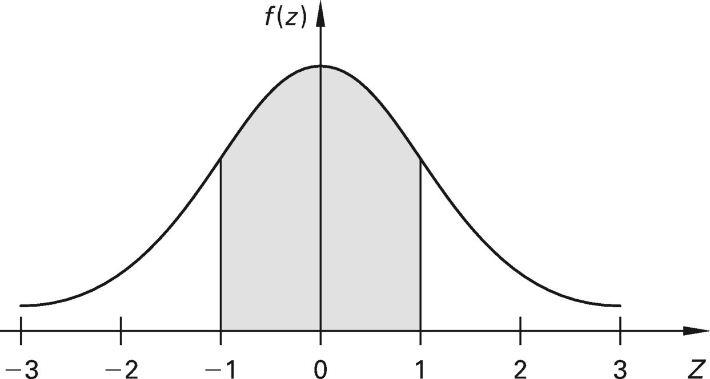
From the Unit Normal Distribution table in the *NCEES Handbook*, the shaded area is
***The answer is [latex]C[/latex].***
Question:
From the following statements, which describe the Code of Engineering Ethics? Select all that apply.
[latex]A[/latex]
a set of guidelines that describe how a licensed engineer should behave professionally
[latex]B[/latex]
a set of aspirations that describe how a licensed engineer should behave professionally
[latex]C[/latex]
a set of rules that describe a licensed engineer’s responsibilities to the public, clients, and other licensees
[latex]D[/latex]
a set of laws that describe how a licensed engineer should behave professionally
[latex]E[/latex]
a set of rules that incorporate criminal penalties
Solution:
Ethics are a set of guidelines, rules, philosophical concepts, customs, norms, and aspirations for a licensee to follow. The Code articulates the ways in which moral and ethical principles apply to unique situations encountered in professional practice. It indicates to others that the professionals are seriously concerned about responsible and professional conduct. In some cases, it is impossible to comply with every aspect of the Code. Therefore, ethics are also called a set of aspirations that a licensed engineer should aim for. However, ethics are not subject to the law. As the late Chief Justice of the U.S. Supreme Court Earl Warren put it, “Society would come to grief without ethics, which is unenforceable in the courts and cannot be made part of law. . . Not only does law in a civilized society presuppose ethical commitment, it presupposes the existence of a broad area of human conduct controlled only by ethical norms and not subject to law at all.”
***The answer is [latex]A[/latex], [latex]B[/latex], and [latex]C[/latex].***
Question:
An engineer develops a new idea to significantly reduce energy consumption in manufacturing plants. The engineer considers filing a patent application to the United States Patent and Trademark office [latex]USPTO[/latex]. Which categories of patents will the USPTO consider? Select all that apply.
[latex]A[/latex]
utility patent
[latex]B[/latex]
design patent
[latex]C[/latex]
plant patent
[latex]D[/latex]
energy patent
[latex]E[/latex]
efficiency patent
Solution:
A patent for an invention is the grant of a property right to the inventor, issued by the USPTO. According to the USPTO, there are three types of patents.
1.
Utility patents may be granted to anyone who invents or discovers any new and useful process, machine, article of manufacture, or composition of matter, or any new and useful improvement thereof;
2.
Design patents may be granted to anyone who invents a new, original, and ornamental design for an article of manufacture; and
3.
Plant patents may be granted to anyone who invents or discovers and asexually reproduces any distinct and new variety of plant.
Other than these three, there is no other patent category.
***The answer is [latex]A[/latex], [latex]B[/latex], and [latex]C[/latex].***
Question:
:DRILL_LAST_INTERVAL: 4.14
:DRILL_REPEATS_SINCE_FAIL: 2
:DRILL_TOTAL_REPEATS: 2
:DRILL_FAILURE_COUNT: 1
:DRILL_AVERAGE_QUALITY: 3.5
:DRILL_EASE: 2.6
:DRILL_LAST_QUALITY: 5
:DRILL_LAST_REVIEWED: [Y-10-08 Sun 21:%]
Which of the following statements are INCORRECT?
1.
A mechanical engineer thinks of a new heat cycle to increase efficiency. Her idea is protected under the copyright laws.
2.
A mechanical engineer thinks of a new heat cycle to increase efficiency and produces two-dimensional drawings. She keeps the drawings in a secure place. Her work is protected under the copyright laws.
3.
A mechanical engineer examines the workings of a machine in a factory and builds a more efficient machine. She shows the new machine and her design drawings to the public. She is not guilty of copyright infringement.
4.
A mechanical engineer examines the workings of a machine and builds a more efficient machine. She shows the machine and her design to the public. Her design may be patented.
[latex]A[/latex]
I only
[latex]B[/latex]
I and III
[latex]C[/latex]
II and IV
[latex]D[/latex]
I, III, and IV
Solution:
See the *NCEES Handbook*, Ethics and Professional Practice: Intellectual Property section. One of the requirements to be protected under copyright laws is that the work must be tangible. Ideas are intangible and cannot be copyrighted. Therefore, statement I is incorrect.
To be protected under copyright laws, the work must be original, whether published or unpublished. Therefore, statement II is correct.
To be protected under copyright laws, the work must be original, whether published or unpublished. In this case, the engineer has her intellectual property right over the improvements she designed and implemented in the new machine. Her original work is not considered as copyright infringement. Therefore, statement III is correct.
As stated in the *NCEES Handbook*, a utility patent may be granted to anyone who discovers any new machine or article of manufacture. As such, she may be entitled to a utility patent to the extent of her discovery and invention. Statement IV is correct.
***The answer is [latex]A[/latex].***
Question:
An engineering firm desires to reduce its risk arising out of its design work of its employees. Select the type of insurance that the firm should procure.
[latex]A[/latex]
general liability insurance
[latex]B[/latex]
comprehensive insurance
[latex]C[/latex]
engineer’s hazard insurance
[latex]D[/latex]
negligence insurance
Solution:
See the *NCEES Handbook*, Ethics and Professional Practice *Model Rules*, Section 240.15 Rules of Professional Conduct. Engineers are required to perform their professional services at a reasonable standard of care. If an engineer falls short of this standard, the engineer can be found negligent, lacking competence, and committing errors and omission.
An engineer’s liability of can be divided into two categories: professional liability and general liability. Accordingly, different insurance policies are needed to cover a claim arising out of acts and omission of the insured. As a buffer against the professional liability, an engineering firm can purchase insurance to protect itself and its employees. It is called errors and omissions [latex]E&O[/latex] insurance, professional liability [latex]PL[/latex] insurance, negligence insurance, or malpractice insurance. With the payment of the required premium, the E&O insurance protects the firm and its design professional employees from the full cost of defending against a negligence claim made by a client or others. Option D is correct. The insurance types listed in options A through C cover general or nonprofessional situations. For example, a firm can procure auto insurance to cover liabilities resulting from the employees’ use of their vehicles to conduct activities within the scope of their employment.
***The answer is [latex]D[/latex].***
Question:
A licensee should approve and seal only those design documents that
[latex]A[/latex]
meet the minimum requirements of a building code
[latex]B[/latex]
safeguard the life, health, and welfare of the public
[latex]C[/latex]
are personally prepared by them
[latex]D[/latex]
require all green or environmentally friendly materials
Solution:
Meeting the minimum requirements of a building code may not yield sound design documents. The documents must conform to the accepted engineering standards in order to safeguard the life, health, property, and welfare of the public. Therefore, option A is incorrect.
According to the *NCEES Handbook*, Ethics and Professional Practice: *Model Rules*, Section 240.15 Rules of Professional Conduct, A, it is the paramount duty of an engineer to safeguard the life, health, and welfare of the public in conducting their professional service. Therefore, B is a correct option.
According to the *NCEES Handbook*, Ethics and Professional Practice: *Model Rules*, Section 240.15 Rules of Professional Conduct, B.2, licensees should meet two requirements before affixing their seal: [latex]1[/latex] plans or documents must be prepared under their responsible charge and [latex]2[/latex] must have competence in the area of design. Therefore, option C is incorrect.
Unless required by the contract with their client, there is no ethical requirement for a licensee to specify only green or environmentally friendly materials in design. According to the *NCEES Handbook*, Ethics and Professional Practice: Societal Considerations section, the engineers must consider sustainable principles, as a part of the societal considerations. Therefore, option D is incorrect.
***The answer is [latex]B[/latex].***
Question:
A licensee makes a professional judgment that is overruled. The licensee believes that the life, health, property, or welfare of the public is endangered. Who should the licensee inform?
[latex]A[/latex]
the licensee’s employer
[latex]B[/latex]
the licensee’s client
[latex]C[/latex]
other authorities as may be appropriate
[latex]D[/latex]
A or B, and C
Solution:
A licensee who is an employee should inform the licensee’s employer. A self-employed licensee should inform the licensee’s client. In addition, a licensee should inform other authorities as appropriate. See *Model Rules*, Section 240.15 Rules of Professional Conduct, A.3, in the *NCEES Handbook.*
***The answer is [latex]D[/latex].***
Question:
An engineer owns a design firm that generates $1 million per year in gross fees. He calculates that he receives $100,000 per year in profits after paying all employee salaries, benefits, and other expenses. Assume zero inflation and no growth. If the expected rate of return is 10%, the fair market price of the firm is most nearly
[latex]A[/latex]
$600,000
[latex]B[/latex]
$1,000,000
[latex]C[/latex]
$1,600,000
[latex]D[/latex]
$6,000,000
Solution:
The firm would earn a uniform amount, A, of $100,000/yr from now to perpetuity. The amount, *A,* is assumed to be inflation-adjusted. It would not increase since there is no growth. The rate of return*, i*, is 10%, or 0.1. The Engineering Economics section of the *NCEES Handbook* provides the capitalized costs formula. Using the formula, the present value of the firm is
***The answer is [latex]B[/latex].***
Question:
An engineering firm at present gets its drawings printed at a local blueprint facility. The firm is considering buying a new printer for printing its drawings in house. The printer costs $40,000, and the annual operational and insurance cost is $3000. Its life expectancy is 5 years with no salvage value. The printer is expected to generate $15,000 per year in savings for the firm. The rate of return on the printer, as an annual percentage, is most nearly
[latex]A[/latex]
9.0%
[latex]B[/latex]
12%
[latex]C[/latex]
15%
[latex]D[/latex]
16%
Solution:The initial cost and annual cost are both expenses. The rate of return [latex]ROR[/latex] on the investment is unknown. No factor table is available to determine ROR precisely. However, it can be determined by interpolating between two applicable factor tables. Equate the expenses and returns [latex]in thousand dollars[/latex].
The factor tables for 12% and 18% provide *P/A* factors from which the required ROR can be interpolated.
Use linear interpolation between the 12% and 18% interest rates and their ROR. Use the line equation from the Mathematics section of the *NCEES Handbook*.

***The answer is [latex]C[/latex].***
Question:
A concrete mix requires two admixtures: a minimum of 3 doses but no more than 9 doses of admixture A, and a minimum of 8 doses of admixture B. The maximum sum of both doses is 16. The costs of admixtures A and B are $4 and $12 per dose, respectively. The least cost of admixtures to produce the mix is most nearly
[latex]A[/latex]
$101
[latex]B[/latex]
$108
[latex]C[/latex]
$192
[latex]D[/latex]
$216
Solution:Assume that the concrete mix contains
x units of admixture A and
y units of admixture B. Calculate the mix cost,
W, as
The mix requires both admixtures. To keep the mix cost to a minimum, three conditions must be satisfied.

Graph the conditions as shown. The shaded area bound by the three points marked 1, 2, and 3 represents the limits that satisfy the inequalities. The mix cost
W lies within or at the boundaries of the shaded area. The value of
W closest to the origin would yield the minimum mix cost. Compute the cost for the three corners of the shaded area. By inspection, the corner [latex]3,8[/latex] is located closest to the origin and provides the least expensive mix design.

Determine the minimum cost,
Wmin, as

***The answer is [latex]B[/latex].***
Question:
A machine is covered by the manufacturer’s warranty for the first year. After this, the repair cost is expected to be as follows.
cost amount at the end of year 2 $1000 at the end of year 3 $2000 at the end of year 4 $3000 at the end of year 5 $4000
The interest rate is 8%. The annual equivalent repair cost is most nearly
[latex]A[/latex]
$1800
[latex]B[/latex]
$2000
[latex]C[/latex]
$2200
[latex]D[/latex]
$2400
Solution:
The cost grows linearly, as shown.
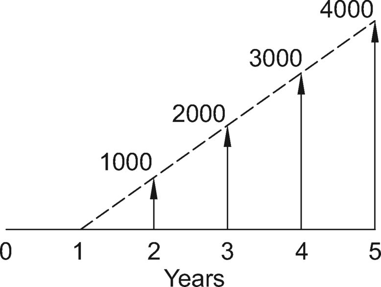
The growth increment is G = $1000. From the factor table,
***The answer is [latex]A[/latex].***
Question:
A design firm anticipates that it will need to upgrade its computers and drafting system in 5 years. The upgrade will cost $500,000. The firm makes deposits every month into an account that earns 0.5% interest compounded monthly. The minimum amount of money the firm should deposit every month to save for the anticipated cost is most nearly
[latex]A[/latex]
$7150
[latex]B[/latex]
$8330
[latex]C[/latex]
$8850
[latex]D[/latex]
$100,000
Solution:
The monthly return is 0.5%. The number of monthly deposits in 5 years will be 60. Use the factor tables to determine the monthly deposit as
***The answer is [latex]A[/latex].***
Question:
A repair project will take 1 year to complete. It will cost $100,000 now and $50,000 at the beginning of the second year. The restoration will extend the life of the facility by 3 years after completion. At a 10% annual rate of return, the yearly minimum income the project should produce to make the project feasible is most nearly
[latex]A[/latex]
$64,000
[latex]B[/latex]
$65,000
[latex]C[/latex]
$66,000
[latex]D[/latex]
$67,000
Solution:
For the project to be feasible, its present worth must be positive [latex]greater than zero[/latex]. Let the annual income from the project be X, as shown.
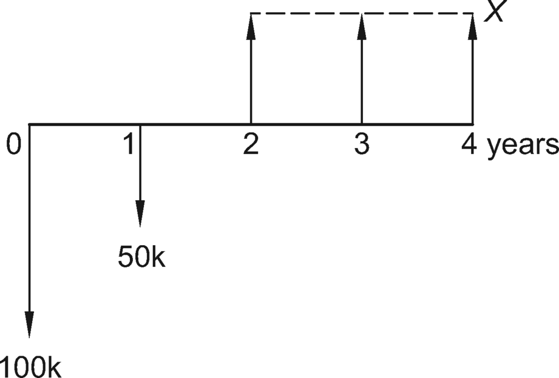
For a 10% annual return, use factor tables to determine present worth as
***The answer is [latex]A[/latex].***
Question:
A steel ring with 300 mm mean diameter is made of a 20 mm by 20 mm cross section. It is uniformly wound with 400 turns of wire that is 2 mm square in cross section. Steel’s permeability is 8.8 × 10−3 H/m. The self-inductance of the coil is most nearly
[latex]A[/latex]
0.2 H
[latex]B[/latex]
0.6 H
[latex]C[/latex]
8 H
[latex]D[/latex]
9 H
Solution:
The following information is given.
See the *NCEES Handbook,* Electrical and Computer Engineering section. The inductance L of a coil of N turns wound on a core with cross-sectional area A and permeability *μ* with a mean path of l is calculated as
***The answer is [latex]B[/latex].***
Question:
A capacitor consists of two square aluminum plates 11 mm apart, each 100 mm square with sides parallel to each other. The relative permittivity of natural rubber is 7. The capacitance is most nearly
[latex]A[/latex]
30 *μμ*F
[latex]B[/latex]
56 *μμ*F
[latex]C[/latex]
62 *μμ*F
[latex]D[/latex]
70 *μμ*F
Solution:See the *NCEES Handbook*, Electrical and Computer Engineering section. A parallel plate capacitor with an area
A, with plates separated a distance
d by an insulator with a permittivity *ε*, has a capacitance of
The absolute permittivity of air is
The relatively permittivity of natural rubber is

Therefore, the permittivity of natural rubber is

The plate area is calculated as

Finally, determine the capacitance,
C, as

***The answer is [latex]B[/latex].***
Question:
Two theorems are defined among the following statements.
[latex]A[/latex]
Whatever amount of current goes into a node of the circuit must come out of the node.
[latex]B[/latex]
The algebraic sum of the voltages is zero around any loop in the circuit.
[latex]C[/latex]
Any circuit can be reduced to a single current source with a parallel resistance.
[latex]D[/latex]
Any circuit can be reduced to a single voltage source in series with a resistance.
Move each applicable statement to the appropriate row.
1. Thevenin theorem 2. Norton theorem
Solution:
See the *NCEES Handbook* Electrical and Computer Engineering section.
Kirchhoff’s current law states that whatever current goes into a node of the circuit must come out of the node. This is stated in statement A.
Kirchhoff’s voltage law states that the algebraic sum of the voltages is zero around any loop in the circuit. This is stated in statement B.
The Norton theorem states that any given complicated circuit can be reduced to a single current source with a parallel resistance. Its diagram is given in the *NCEES Handbook*. This is stated in statement C, and it provides one part of the answer.
The Thevenin theorem states that any given complicated circuit can be reduced to a single voltage source in series with a resistance. Its diagram is given in the *NCEES Handbook*. This is stated in statement D, and it provides the second part of the answer.
***The answer is
Question:A sawtooth waveform is shown.

In the waveform, the voltage increases linearly. The root-mean-square [latex]rms[/latex] voltage is most nearly
[latex]A[/latex]
30 V
[latex]B[/latex]
35 V
[latex]C[/latex]
64 V
[latex]D[/latex]
220 V
Solution:
The effective or rms value for a periodic waveform with period T is given in the *NCEES Handbook*, Electrical and Computer Engineering section, as
**step 1: **
Determine the equation of the voltage at time interval t. The line equation that is passing the origin is
The slope m is
From the waveform equation,
**step 2: **
Using the above data, determine the rms value of voltage.
***The answer is [latex]B[/latex].***
Question:
A DC series motor is supplied with 110 V, and the input current is 20 A. The armature resistance is 0.4 Ω, and the field resistance is 0.2 Ω. The other losses add up to 250 W, and the voltage drop at the brushes is 3 V. The efficiency of the motor is most nearly
[latex]A[/latex]
45%
[latex]B[/latex]
55%
[latex]C[/latex]
65%
[latex]D[/latex]
75%
Solution:The motor efficiency is defined as the ratio of motor power output to the power input.

See the *NCEES Handbook*, Electrical and Computer Engineering section. Power absorbed by a resistive element is given as
The motor circuit is shown.

Determine the power input to the motor.

The problem states four types of losses.
**step 1: **
Determine power loss in the armature.
**step 2: **
Determine power loss in the field.
**step 3: **
Determine power loss in the brushes.
It is known that friction loss is 250 W.
**step 4: **
Determine the total power loss.
**step 5: **
Determine the power output.

***The answer is [latex]D[/latex].***
Question:
Several nonparallel forces hold a rigid body in equilibrium. Which of the following statements is true about the forces?
[latex]A[/latex]
The forces must be coplanar.
[latex]B[/latex]
The forces must be concurrent.
[latex]C[/latex]
The forces must be equal in magnitude.
[latex]D[/latex]
The forces must form an equilateral triangle.
Solution:
See the *NCEES Handbook*, Statics: Equilibrium Requirements section. For equilibrium to occur under a system of forces, two conditions must be met.
The problem states the forces are nonparallel. In other words, the forces meet at a point. A system of forces that meet at a point are called concurrent forces. The resultant moment of the system of concurrent forces about their meeting point is zero. Therefore, the forces must be concurrent; otherwise, there would be a resultant moment of the point, and the body would not be in equilibrium.
***The answer is [latex]B[/latex].***
Question:Four truss elements are connected at a node as shown. Force
F1 is 10 kN compressive, and force
F4 is 20 kN compressive.

Forces
F2 and
F3 are, respectively,
[latex]A[/latex]
6 kN [latex]compression[/latex], 8 kN [latex]tension[/latex]
[latex]B[/latex]
6 kN [latex]tension[/latex], 8 kN [latex]compression[/latex]
[latex]C[/latex]
6 kN [latex]tension[/latex], 8 kN [latex]tension[/latex]
[latex]D[/latex]
6 kN [latex]compression[/latex], 8 kN [latex]compression[/latex]
Solution:A force with its arrow pointing toward a joint denotes a compressive force, and a force with its arrow pointing away from a joint denotes a tensile force. Assume that forces
F2 and
F3 are positive. From equilibrium, the sums of the force components in the
x- and
y-directions are zero.
The angle *θ* is determined from the member slope of 3:4.
By substituting the values into the equations,
Force
F3 is tensile, as shown. Similarly, from the
y-axis,

The negative sign shows that
F2 is not tensile but is a compressive force.
***The answer is [latex]A[/latex].***
Question:
A shaft is subjected to loading as shown.
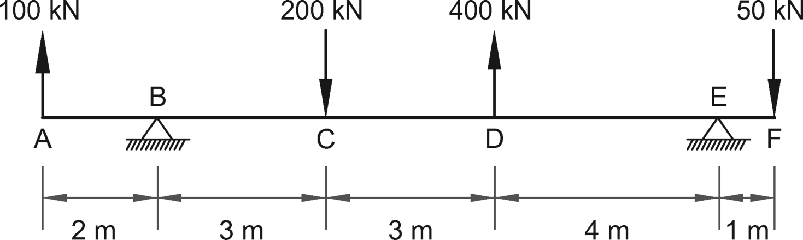
The equivalent loading at point A is most nearly
[latex]A[/latex]
−250 kN, 1550 kN·m [latex]cw[/latex]
[latex]B[/latex]
250 kN, 0 kN·m
[latex]C[/latex]
250 kN, 1550 kN·m [latex]cw[/latex]
[latex]D[/latex]
350 kN, 0 kN·m
Solution:The equivalent loading is the resultant force and accompanying moment. The resultant applied force,

, is the algebraic sum of all applied forces at point A, as shown. Let upward force be positive.
Next, take the moments of all applied loads about A.


***The answer is [latex]C[/latex].***
Question:
A three-dimensional space truss is subjected to a combination of loads. The truss members may be subjected to
[latex]A[/latex]
axial force only
[latex]B[/latex]
axial force and shear force
[latex]C[/latex]
axial force, shear force, and bending moment
[latex]D[/latex]
axial force, shear force, bending moment, and torsion
Solution:
See the *NCEES Handbook*, Statics: Statically Determinate Truss section. The trusses have pinned joints, which can transfer axial forces only. As such, truss members can be subjected to axial loads only.
***The answer is [latex]A[/latex].***
Question:
A truss tower is shown.
At joint J, the tower carries an antenna that weighs 500 kN. The vertical reaction at support A is most nearly
[latex]A[/latex]
25.5 kN
[latex]B[/latex]
250 kN
[latex]C[/latex]
333 kN
[latex]D[/latex]
indeterminate, since the tower is indeterminate
Solution:The truss tower is a rigid body, and its reactions can be determined using the equilibrium conditions
Use the sum of moments about B to find
VA.

Shortcut: The applied vertical load is 500 kN. Therefore, the sum of the vertical reactions at A and B is also 500 kN. Due to symmetry, the vertical reactions at supports A and B are equal. Therefore, both vertical reactions are 250 kN.
***The answer is [latex]B[/latex].***
Question:A composite beam-slab section is shown.

The concrete strength is 5000 psi, and the steel section is a 14 in × 48 in beam [latex]
Fy = 60 ksi[/latex]. The distance from the bottom flange to the centroid of the composite section is most nearly
[latex]A[/latex]
9.92 in
[latex]B[/latex]
10.8 in
[latex]C[/latex]
13.8 in
[latex]D[/latex]
16.4 in
Solution:Material properties such as strength and modulus of elasticity are not considered in computing the centroid of a composite section. The centroid can be found by summation.

The areas of the components are

The centroid of each component is at its middepth.
The distance to the centroid of the composite section is

***The answer is [latex]D[/latex].***
Question:
Two identical steel bars are welded together, one on the top of the other. The ratio of the moment of inertia [latex]MOI[/latex] of the welded bars to the MOI of a single bar is most nearly
[latex]A[/latex]
2
[latex]B[/latex]
4
[latex]C[/latex]
8
[latex]D[/latex]
16
Solution:The MOI of a rectangular section with width
b and depth
d about its axis is determined using the formula

For the welded bars, the depth increases to 2
d, as shown.
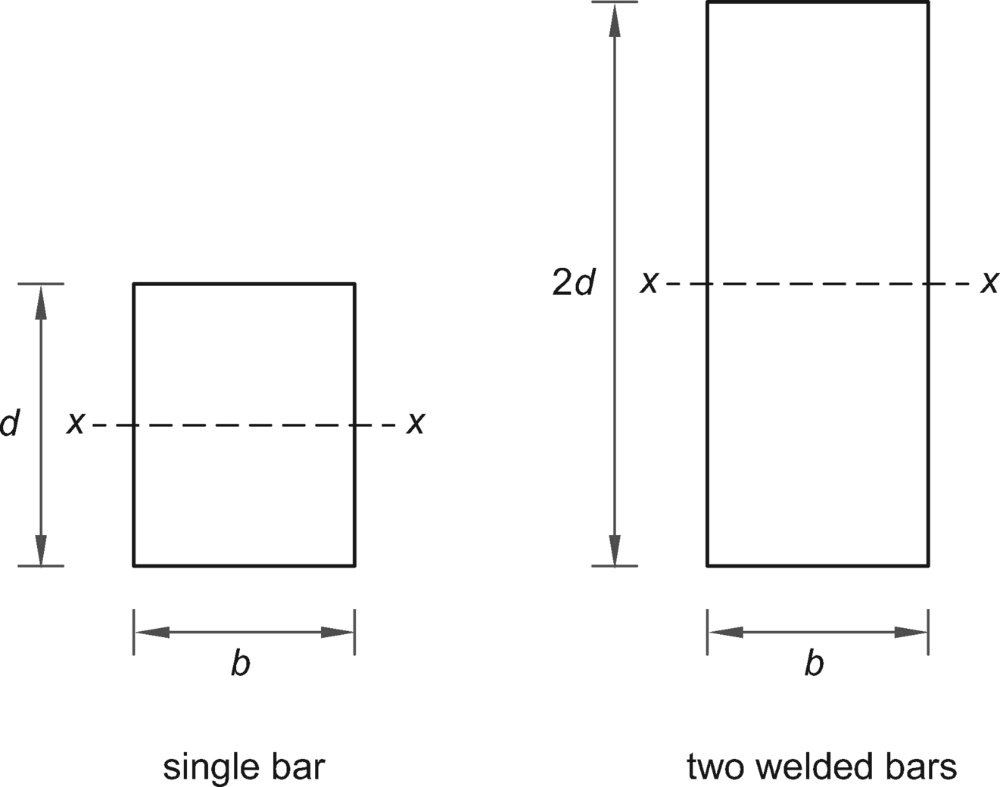
Therefore, the MOI of the welded bars is
***The answer is [latex]C[/latex].***
Question:
A concrete block weighing 150 lbf is resting on a plane surface. Which statements are true? Select all that apply.
[latex]A[/latex]
Limiting friction is defined as the maximum frictional force, which comes into play when a body just begins to slide over the surface of another body.
[latex]B[/latex]
The force of friction between the two surfaces increases if the contact area is reduced.
[latex]C[/latex]
The force of friction between the two surfaces decreases if the contact area is reduced.
[latex]D[/latex]
The force of friction between the two surfaces is independent of the contact area.
[latex]E[/latex]
The force of friction between the two surfaces is independent of the speed at which the block slides on the surface.
Solution:
See the *NCEES Handbook*, Statics: Friction section. Limiting friction is defined as the maximum frictional force, which comes into play when a body just begins to slide over the surface of another body. Thus, option A is correct.
The frictional force is a vector and is independent of the area of contact. Thus, statements B and C are incorrect, and statement D is correct.
As a body starts to slide, the force of friction remains constant at moderate speeds, but decreases slightly as the speed increases. Thus, statement E is incorrect.
***The answer is [latex]A[/latex] and [latex]D[/latex].***
Question:A block weighing 500 lbf is placed on a sloping plane with a friction coefficient of 0.5. The block is connected to a cable that is in tension as shown.

The friction coefficient between the cable and the pulley is 0.2. The minimum force,
T2, required to pull the block up the slope is most nearly
[latex]A[/latex]
51 lbf
[latex]B[/latex]
110 lbf
[latex]C[/latex]
250 lbf
[latex]D[/latex]
500 lbf
Solution:Consider equilibrium along the
x-axis and
y-axis at impeding motion between the block and the plane, as shown. Determine the force needed to stop the block from sliding down.

For the pulley, use the belt friction formula.
***The answer is [latex]A[/latex].***
Question:
An asymmetrical truss is shown.
It carries a vertical load of 10 kN at joint E. Which members in the truss have zero force?
[latex]A[/latex]
AB, EJ, JD, JC
[latex]B[/latex]
EK, FK, AB, BG
[latex]C[/latex]
BG, CH, DJ, EJ
[latex]D[/latex]
EK, DJ, CJ, CH, BH, BG
Solution:
Use the truss analysis method given the *NCEES Handbook*. Alternately, use the zero-force member rule, which states that the force in a member is zero if
[latex]a[/latex] two noncollinear members are connected to a joint that has no external loads or reactions applied to it; then, the force in both members is zero, or
[latex]b[/latex] in a three-member joint, two members are collinear, and the joint has no external loads or reactions applied to it; then, the force in the noncollinear member is zero.
**step 1: **
Since the load is applied to point E, all members [latex]AB, BC, CD, DE, EF[/latex] along the bottom chord have nonzero force.
**step 2: **
Since the reactions at supports A and F are nonzero, the forces in the member AJ and FJ are nonzero.
**step 3: **
Apply the zero-force rule to all other members. Thus, the six zero-force members are EK, DJ, CJ, CH, BH, and BG.
***The answer is [latex]D[/latex].***
Question:
Which statement is true?
[latex]A[/latex]
Work is said to be done if force is applied and no displacement takes place.
[latex]B[/latex]
Work is said to be done if no force is applied and displacement takes place.
[latex]C[/latex]
A body is said to have energy even though it is not moving.
[latex]D[/latex]
The total energy possessed by a moving body at a constant velocity varies with time.
Solution:See the *NCEES Handbook*, Dynamics: Work section. Work is defined as the product of force and distance travelled and expressed as

In defining work, statement A has no displacement, and statement B has no force. Therefore, statements A and B are incorrect. A body can have energy even though it is not moving; it can have energy by virtue of its position. It is called potential energy. Therefore, statement C is correct. In this case, the total energy of a moving body equals its kinetic energy [latex]KE[/latex], which is defined as

In the KE equation, the velocity, v, is constant over time. Therefore, KE also remains constant over time. Statement D is incorrect.
***The answer is [latex]C[/latex].***
Question:
A 10,000 lbf vehicle traveling at 60 mph comes to a stop without skidding. The wheelbase and center of gravity of the vehicle are shown.
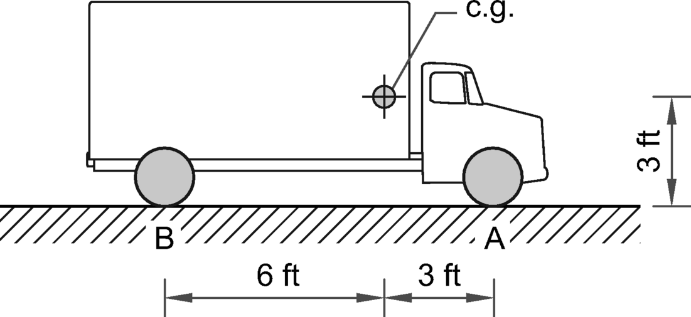
The coefficient of friction is 0.35. The additional load that will be imposed on the front axle due to deceleration is most nearly
[latex]A[/latex]
1200 lbf
[latex]B[/latex]
3500 lbf
[latex]C[/latex]
6500 lbf
[latex]D[/latex]
8800 lbf
Solution:The question asks for the additional load induced in the front axle. Therefore, the wheel reactions due to gravity load are excluded.

Consider the energy equation:
The force
F acts horizontally at the CG, which is located 3 ft above ground. Taking the moment about the rear axle B,

***The answer is [latex]A[/latex].***
Question:An elevator is designed to carry a 1000 lbf load, including its self-weight. The elevator is hung by a single cable, as shown.

The elevator accelerates upward at a constant rate of 10 ft/sec2. The service load on the cable is most nearly
[latex]A[/latex]
310 lbf
[latex]B[/latex]
690 lbf
[latex]C[/latex]
1000 lbf
[latex]D[/latex]
1300 lbf
Solution:See the *NCEES Handbook*, Dynamics: Particle Kinetics section. Use Newton’s second law of motion.
**step 1: **
Under static condition, for equilibrium,
T =
W, where
T is the tension in the cable and
W is the total weight of the elevator.
**step 2: **
For dynamic equilibrium, the maximum tension in the cable,
T, occurs during the period the elevator is being accelerated upward.

***The answer is [latex]D[/latex].***
Question:
A 1 kip force is used to compress a spring by 4 in from its free length of 8 in. The spring acts linearly. The work done in compressing the spring an additional 4 in is most nearly
[latex]A[/latex]
2 in-kip
[latex]B[/latex]
4 in-kip
[latex]C[/latex]
6 in-kip
[latex]D[/latex]
8 in-kip
Solution:The applied force,
F, is proportional to the spring deformation,
x. Therefore, the spring force-deformation relationship is
k is the spring constant.

Work done, *W,* equals force × distance traveled [latex]i.e., from 8 in height to 4 in[/latex].

***The answer is [latex]C[/latex].***
Question:A crank shaft is 50 cm long and rotates about point A, as shown.

If the shaft is rotating at a constant angular velocity of 20 rad/s, the acceleration at its tip, B, is most nearly
[latex]A[/latex]
20 m/s2
[latex]B[/latex]
200 m/s2
[latex]C[/latex]
310 m/s2
[latex]D[/latex]
1000 m/s2
Solution:The acceleration, *α*, of a particle rotating at a distance
r from a fixed point has two components: tangential and radial.

The radial acceleration is
In this case, the shaft is rotating at a constant velocity, so its angular acceleration is zero. Therefore, its tangential acceleration, *α*
t, is 0.
***The answer is [latex]B[/latex].***
Question:
According to Kennedy’s rule, when three bodies move relative to one another their instantaneous centers will lie on
[latex]A[/latex]
a straight line
[latex]B[/latex]
a circular curve
[latex]C[/latex]
a parabolic curve
[latex]D[/latex]
an elliptical curve
Solution:
Kennedy’s rule states that when three bodies move relative to one another, they have three instantaneous centers, all of which are on the straight line.
***The answer is [latex]A[/latex].***
Question:
Which one of the following statements is correct?
[latex]A[/latex]
The number of centers of gravity of the mass of the body depends on the number of principal axes of the body.
[latex]B[/latex]
The radius of gyration is defined as the square of the distance from a given reference where the whole mass or area of the body is assumed to be concentrated to give the same value of the moment of inertia.
[latex]C[/latex]
The maximum moment of inertia is at the centroidal axis of the section.
[latex]D[/latex]
The least moment of inertia is at the centroidal axis of the section.
Solution:
See the *NCEES Handbook*, Statics: Centroids of Masses, Areas, Lengths, and Volume, Statics: Moment of Inertia, and Dynamics: Mass Moment of Inertia sections.
A body has only one centroid where the entire mass of the body is assumed to be concentrated. Therefore, statement A is incorrect.
The radius of gyration is defined as the distance from a given reference where the whole mass or area of the body is assumed to be concentrated to give the same value of the moment of inertia. Statement B is incorrect.
The least moment of inertia is at the centroidal axis of the section. Therefore, statement C is incorrect, and statement D is correct.
***The answer is [latex]D[/latex].***
Question:
The Charpy test machine is used to determine the impact load capacity of a test specimen, as shown.
The machine has a 10 lbf striking pendulum. The pendulum’s center of mass is at a distance of 3 ft from the pivot point of the pendulum. The scale of the machine is zero degrees in the vertical line and is graduated on both sides from zero. During an impact test, the angle of fall was 90°, and the angle of rise after breaking the specimen was 15°. The energy required to break the specimen is most nearly
[latex]A[/latex]
13 ft-lbf
[latex]B[/latex]
19 ft-lbf
[latex]C[/latex]
29 ft-lbf
[latex]D[/latex]
33 ft-lbf
Solution:According to the *NCEES Handbook*, Materials Science/Structure of Matter section, the Charpy test is used to determine the amount of energy required to cause failure in standardized specimen. The principle of a Charpy machine is that the pendulum’s potential energy is lost in causing failure of the test specimen. Use the *NCEES Handbook*, Dynamics: Potential Energy section to determine the energy. The energy absorbed by the specimen in breaking, Δ
U, is equal to the potential energy [latex]PE[/latex] at the angle at which the pendulum was released [latex]point A[/latex], minus the PE at the angle the pendulum reached after causing failure of the specimen [latex]point B[/latex].
**step 1: **
Take the point B as the reference plane. The general equation for the height of the pendulum’s center of mass above the reference plane for any angle *θ* is

**step 2: **
Determine the initial energy of the pendulum.

**step 3: **
Determine the pendulum energy after breaking.

**step 4: **
Determine the loss of pendulum energy in causing failure of the specimen.
***The answer is [latex]C[/latex].***
Question:A car weighing 6000 lbf and travelling at a speed of 30 mph crashes into a rigid wall, as shown.
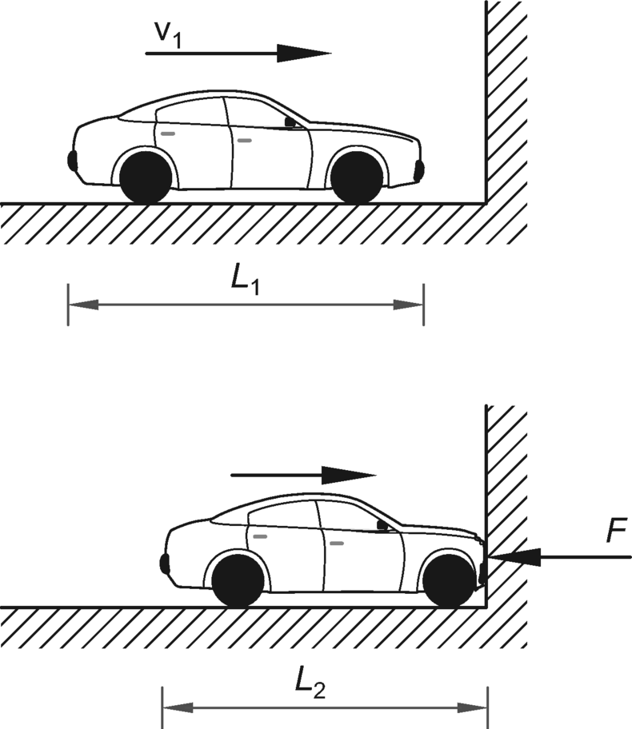
The car front-end deforms instantaneously so that the car length is reduced by 2 ft, as shown. Assume that the car front end deforms plastically, as shown.

What, most nearly, is the impact force exerted on the car?
[latex]A[/latex]
6.1 kips
[latex]B[/latex]
62 kips
[latex]C[/latex]
91 kips
[latex]D[/latex]
134 kips
Solution:In this case, the car’s engine provides the kinetic energy, which is dissipated by the car frontal end getting crushed, and the car length shortens. This is the distance needed to bring the car speed to zero. See the *NCEES Handbook*, Dynamics: Kinetic Energy and Work sections. Use conservation of energy and the definition of work done.

**step 1: **
Convert the car’s speed from mph to ft/sec, using the *NCEES Handbook*, Units and Conversion Factors section.
**step 2: **
Determine the distance, *δ*.

**step 3: **
Determine the impact force on the car.
***The answer is [latex]C[/latex].***
Question:A spring has a stiffness of 8 kips/ft and is carrying a 4 lbf weight. There is no damping device attached to the spring, as shown.

Assume
g = 32 ft/sec2. Which of the following is the equation of motion of the spring?
[latex]A[/latex]
*ÿ* \+ 64
y = 0
[latex]B[/latex]
*ÿ* \+ 32
y = 0
[latex]C[/latex]
*ÿ* \+ 8
y= 0
[latex]D[/latex]
*ÿ* \+ 4*ẏ* \+ 32= 0
Solution:See *NCEES Reference Handbook*, Dynamics: Free and Forced Vibrations. The equation of motion for a single degree-of-freedom vibration system, containing a mass
m, a spring
k, and a viscous damper *c,* in terms of
y, is
**step 1: **
For an undamped system, damping,
c = 0. Therefore, the equation reduces to
Substitute the values of
k and
m into the differential equation.

***The answer is [latex]A[/latex].***
Question:
Consider a simply supported beam and its shear force [latex]S.F.[/latex] diagram shown. The beam loading information is not available.
The maximum bending moment in the beam is most nearly
[latex]A[/latex]
0 kN·m
[latex]B[/latex]
15,000 kN-m
[latex]C[/latex]
20,000 kN·m
[latex]D[/latex]
40,000 kN·m
Solution:The maximum bending moment occurs at the section where shear force is zero. In this case, the shear force is zero at point C. Therefore, the maximum bending moment is at point C. The change in the bending moment between two points in a beam equals the area of the S.F. diagram between the two points.

Since the beam is simply supported,
***The answer is [latex]C[/latex].***
Question:
A point in a thin metallic plate is under biaxial stress of 100 ksi in the *x-*direction and 50 ksi in the *y-*direction, as shown.
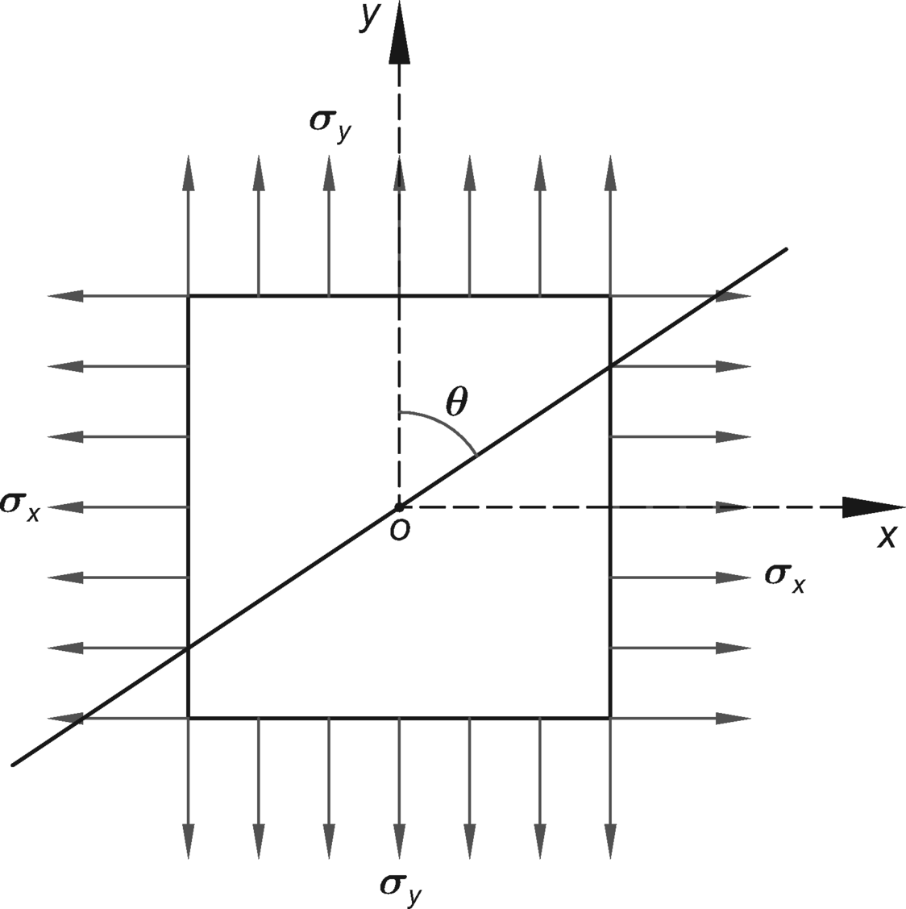
The normal stress at 30° from the minor axis as shown is most nearly
[latex]A[/latex]
25 ksi
[latex]B[/latex]
35 ksi
[latex]C[/latex]
50 ksi
[latex]D[/latex]
75 ksi
Solution:Use the Mohr Circle method as given in the *NCEES Handbook*. Draw the circle as shown.

The circle is drawn with the center on the normal stress. Its center C is located at
The radius of the Mohr’s circle is

***The answer is [latex]A[/latex].***
Question:
A 1 m long, 20 cm wide, and 20 mm thick aluminum bar is pulled by a 300 kN axial force. The decrease in bar width is most nearly
[latex]A[/latex]
1.0 *μ*m
[latex]B[/latex]
36 *μ*m
[latex]C[/latex]
72 *μ*m
[latex]D[/latex]
90 *μ*m
Solution:This problem describes a uniaxial case of Hooke’s law. The bar under tension is shown.
As the bar elongates, it decreases in width. The decrease in width is a function of lateral strain and the plate width.

The material properties of aluminum are given in the Typical Material Properties table in the Mechanics of Materials section of the *NCEES Handbook*. From the conversion factors table in the Units and Conversion Factors section of the *NCEES Handbook*

**step 1: **
Determine the Young’s modulus of aluminum, as given in the *NCEES Handbook*.
**step 2: **
Determine cross-sectional area of the bar.

**step 3: **
Determine axial stress in the bar.
**step 4: **
Determine the longitudinal strain.
**step 5: **
Determine the lateral strain. The *NCEES Handbook*, Mechanics of Materials: Material Properties section, gives Poisson’s ratio, *ν*, for aluminum as 0.33.
The lateral strain is
**step 6: **
Determine decrease in width.
***The answer is [latex]C[/latex].***
Question:
A steel bar is placed on top of an identical bar, and then the two are welded together, as shown.
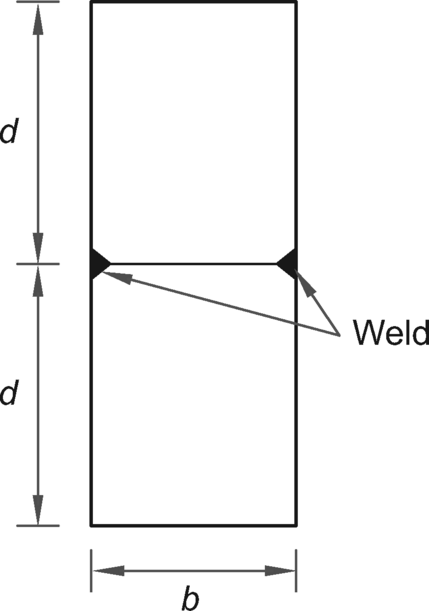
The weld is adequate, and no slippage can take place during bending. What is the ratio of the combined bar’s bending stiffness after welding to the bending stiffness of the two bars placed one on top of the other before welding?
[latex]A[/latex]
2:1
[latex]B[/latex]
4:1
[latex]C[/latex]
8:1
[latex]D[/latex]
16:1
Solution:The bars are solid with a rectangular shape. Their stiffness is proportional to the moment of inertia [latex]MOI[/latex] of the section. For a rectangular section, the MOI is given by

The two bars placed one on the top of the other act independently and noncompositely. Both carry equal loads, and both deflect equally, as shown.

After welding, the two sections act as a composite section that has a total depth of 2*d.* Its MOI is given by
The ratio of composite MOI to the noncomposite MOI is 8/2, or 4:1.
***The answer is [latex]B[/latex].***
Question:
A 12 in outer diameter steel tube has a wall thickness of 1 in. The tube is 10 ft long and is subjected to a torque of 100 ft-kips at its ends. The angle of twist between its ends is most nearly
[latex]A[/latex]
0.18°
[latex]B[/latex]
0.71°
[latex]C[/latex]
1.6°
[latex]D[/latex]
3.1°
Solution:The angle of rotation of the tube, in radians, is given by

The shear modulus,
G, for steel is 11 Mpsi.
**step 1: **
Determine the polar moment of inertia,
J, for a hollow tube.

The outer diameter is
The inner diameter is
The polar moment of inertia is
Use this value for the polar moment of inertia to calculate the angle of rotation of the tube.
***The answer is [latex]B[/latex].***
Question:
Which of the following is a correct statement?
[latex]A[/latex]
The elongation of a bar in the direction of the force is called longitudinal strain.
[latex]B[/latex]
Poisson’s ratio is defined as the ratio of longitudinal strain to lateral strain.
[latex]C[/latex]
The bulk modulus is defined as the ratio of linear stress to linear strain.
[latex]D[/latex]
The volumetric strain is defined as the ratio of change in volume to original volume.
Solution:
See the *NCEES Handbook*, Mechanics of Materials section.
The longitudinal strain is defined as the elongation of a bar per unit length in the direction of the force. Therefore, statement A is incorrect.
Poisson’s ratio is defined as the ratio of lateral strain to longitudinal strain. Therefore, statement B is incorrect.
When a body is subjected to a triaxial loading of equal intensity, the ratio of direct stress to the corresponding strain is called bulk modulus. Therefore, statement C is incorrect.
The volumetric strain is defined as the ratio of change in volume to original volume. Therefore, statement D is correct.
***The answer is [latex]D[/latex].***
Question:
Two bars, A and B, of equal lengths are joined and act compositely. Bar A has higher modulus of thermal expansion than bar B. When the system temperature is raised, what type of stress will be induced in bar A?
[latex]A[/latex]
compressive stress
[latex]B[/latex]
tensile stress
[latex]C[/latex]
shear stress
[latex]D[/latex]
zero stress
Solution:
As the temperature rises, bar A tends to expand more than bar B, as shown.
In an unrestrained situation, neither bar would have any induced stress. If they are restrained to expand or contract equally, stresses would be induced in both bars. Bar A is not able to fully expand due to restraint caused by bar B. As such, bar A is in compression, bar B is in tension, and both bars expand equally.
***The answer is [latex]A[/latex].***
Question:
A crane runway bracket is subjected to combined shear force and bending moment, as shown. The bracket has four 1 in diameter A325 bolts and a 50 ksi steel plate, which are adequate for the load shown.
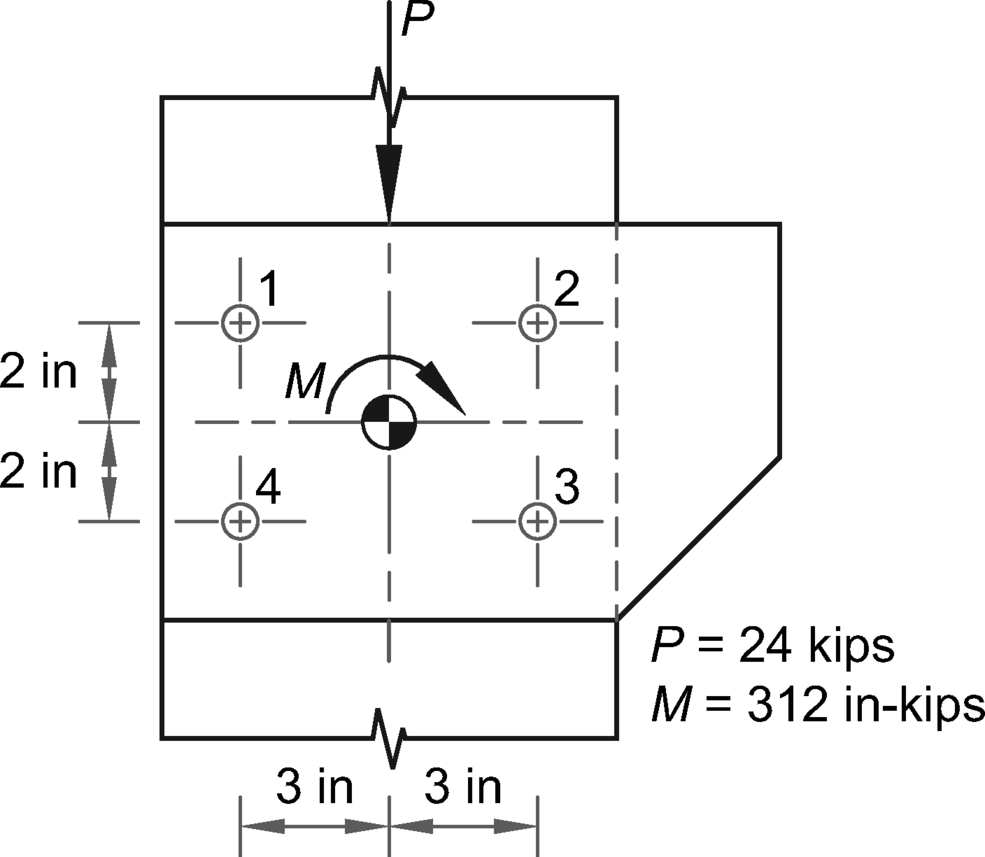
The centroid of the bolt assembly and the location properties of the bolts are tabulated.
no. x y x2 y2 1 −3 in 2 in 9 in2 4 in2 2 3 in 2 in 9 in2 4 in2 3 3 in −2 in 9 in2 4 in2 4 −3 in −2 in 9 in2 4 in2 sum 36 in2 16 in2
The total force in bolt 1 is most nearly
[latex]A[/latex]
6.4 kips
[latex]B[/latex]
12 kips
[latex]C[/latex]
23 kips
[latex]D[/latex]
29 kips
Solution:See the *NCEES Handbook*, Mechanical Engineering section. The combined shear and moment load is resisted by the four-bolt assembly. The applied system of forces on bolt 1 is shown.

Determine the resultant of applied forces
F1 and
F* The forces
F1 and
F2 are shown in the *NCEES Handbook* in its fastener groups force diagram. Consider downward force as negative.
**step 1: **
The magnitude of direct shear force on each bolt due to
P is
The force acts in the same direction to the applied load,
P.
**step 2: **
Resolve the applied bending moment to the system of shear forces on the bolts. The magnitude of shear force due to moment
M is
For convenience, resolve the force
F2 in the
x- and
y-directions.

Determine distance
r between the bolts and the centroid using the table given in the problem statement.

The directions of the forces are shown.
**step 3: **
Determine the resultant force using the vector method given in the *NCEES Handbook*, Statics section. The total shear force on a bolt is the vector sum of the two forces.
The resultant shear on bolt 1 is

***The answer is [latex]B[/latex].***
Question:
A steel shaft has an outer diameter of 400 mm and a wall thickness of 20 mm. The shaft is supported at two simple supports 12 m apart. The shaft is carrying a uniformly distributed load [latex]UDL[/latex] of 2.5 kN/m, including its self-weight. The shaft’s maximum deflection is most nearly
[latex]A[/latex]
1.5 mm
[latex]B[/latex]
7.8 mm
[latex]C[/latex]
16 mm
[latex]D[/latex]
48 mm
Solution:The shaft is carrying a UDL of 2.5 kN/m [latex]2500 N/m[/latex]. For deflection, see the *NCEES Handbook*, Mechanics of Materials: Simply Supported Beam Slopes and Deflections table.

The maximum deflection occurs at its midspan.

**step 1: **
Determine the moment of inertia of the hollow shaft.

The outer radius is

The inner radius is

The modulus of elasticity is
**step 2: **
Determine steel’s modulus of elasticity.
The maximum deflection is
***The answer is [latex]B[/latex].***
Question:
A W14×74 shape grade 50 steel column is shown. The column is 20 ft long and is pinned at both ends.
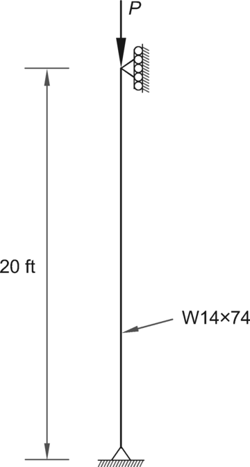
The column’s buckling capacity is most nearly
[latex]A[/latex]
330 kips
[latex]B[/latex]
670 kips
[latex]C[/latex]
1100 kips
[latex]D[/latex]
1300 kips
Solution:The W-shape properties are given the *NCEES Handbook*, Design of Steel Components section, W Shapes Dimensions and Properties table. The column buckling capacity,
Pcr, can be determined using the Euler equation.
For a W14×74,
Ix = 795 in4 and
Iy = 134 in4.
The column has pinned conditions at both ends. Since the column would buckle about the weaker axis,
Iy governs.

For a pinned-pinned column,
K = 1.

***The answer is [latex]B[/latex].***
Question:
Consider a prismatic propped cantilever beam. A moment is applied at its non-fixed end. The carryover factor is
[latex]A[/latex]
zero
[latex]B[/latex]
one-half
[latex]C[/latex]
one
[latex]D[/latex]
two
Solution:See the *NCEES Handbook*, Civil Engineering: Structural Analysis section. The beam with the applied moment,
MA, is shown.

Support B is the fixed end of the propped cantilever. The induced moment at support B,
MB, is called the carryover moment. The carryover factor is expressed as the ratio
The associated carryover factor is one-half. Option B is correct.
***The answer is [latex]B[/latex].***
Question:
A specimen is tested using the Brinell hardness test and determined to have a BHP number of 98. Its tensile strength is most nearly
[latex]A[/latex]
9.8 ksi
[latex]B[/latex]
49 ksi
[latex]C[/latex]
74 ksi
[latex]D[/latex]
98 ksi
Solution:See the *NCEES Handbook*, Materials Science section. The tensile strength of a material is related to its hardness.

***The answer is [latex]B[/latex].***
Question:
The stress at which a material will experience permanent deformation is called the
[latex]A[/latex]
yield stress
[latex]B[/latex]
ultimate stress
[latex]C[/latex]
elastic limit
[latex]D[/latex]
proportional limit
Solution:The stress is defined as force per unit area. It is also defined as

The stress at which a material will experience permanent deformation is called the yield stress. The yield stress is the onset when the material is no longer elastic and undergoes a permanent set. It is shown as the yield point.
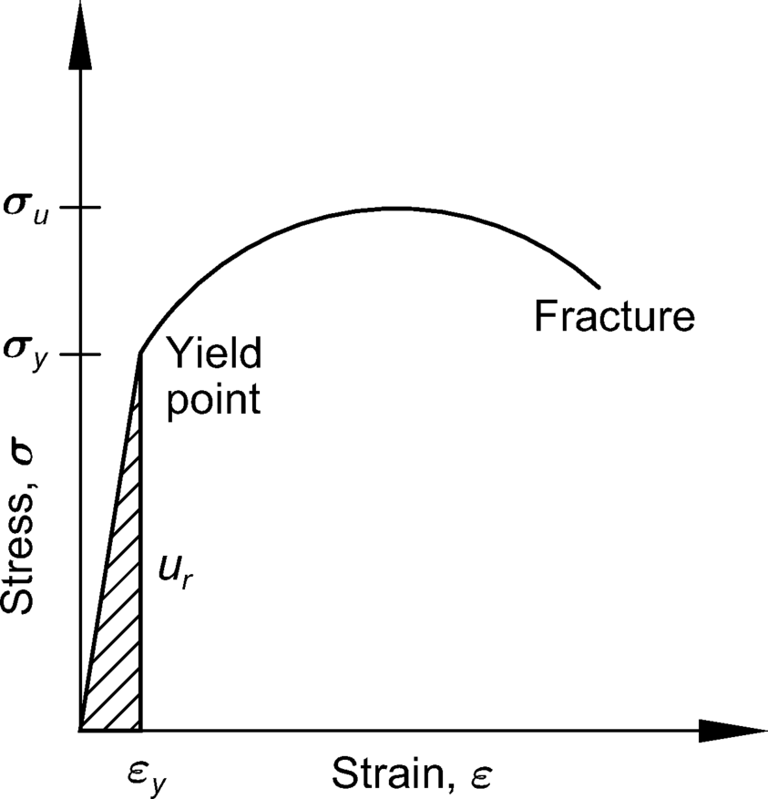
***The answer is [latex]A[/latex].***
Question:
An aluminum type Al 2014-T651 plate has a 0.58 in long crack in its center. The plate is subjected to tension as shown.
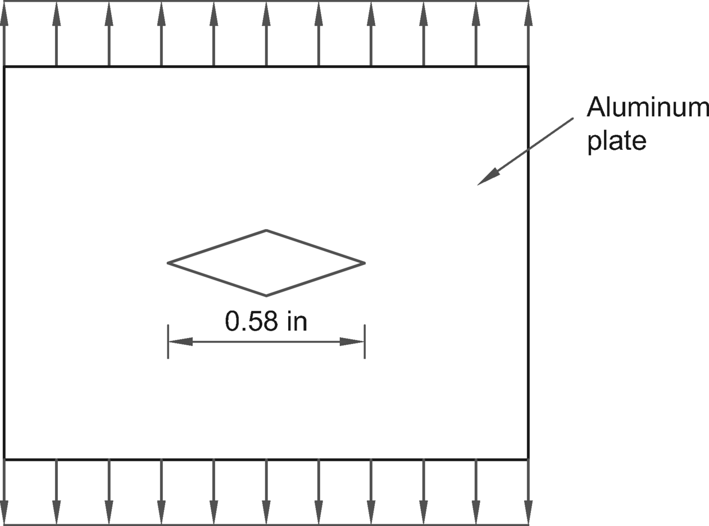
Assume that the plate is infinitely wide and its geometrical factor is unity. The critical value of stress intensity at which catastrophic crack propagation will occur is most nearly
[latex]A[/latex]
23 ksi
[latex]B[/latex]
29 ksi
[latex]C[/latex]
36 ksi
[latex]D[/latex]
651 ksi
Solution:See the *NCEES Handbook*, Materials Science/Structure of Matter section. Fracture toughness depends on the applied stress and the crack length. The stress intensity at which the material will fail is

It is given that
Y = 1. Therefore, maximum applied stress is

**step 1: **
For central crack, crack length = 2
a. Therefore,
**step 2: **
For the plate material,

**step 3: **
Apply the formula and determine critical stress. Therefore,

***The answer is [latex]A[/latex].***
Question:
Which of the following statements is correct?
[latex]A[/latex]
Hardenability is a measure of resistance of plastic deformation as measure by indentation.
[latex]B[/latex]
Hardenability and hardness are synonymous.
[latex]C[/latex]
Hardenability can be measured in the state the metal is in.
[latex]D[/latex]
Hardenability can be gauged by using the Jominy curves.
Solution:
See the *NCEES Handbook*, Materials Science/Structure of Matter section. Hardness is resistance to penetration; hardenability is the “ease” with which hardness can be obtained.
Hardness, and not hardenability, is a measure of resistance of plastic deformation as measured by indentation. Hardenability is the ability or potential of a steel to achieve a certain hardness at a given depth, upon suitable heat treatment and quench. The two terms are not synonymous. Therefore, the statements A and B are incorrect.
Hardenability is not for all metals or their alloys. Hardness can be measured in metals in any condition. Hardenability presumes that the steels will be heat-treated to achieve a targeted hardness at a given depth. Therefore, statement C is incorrect.
It is true that hardenability can be gauged by using the Jominy [latex]H-band[/latex] or curves. The hardenability varies with the steel chemistry and the quenching rates, as shown in the *NCEES Handbook* graph.
***The answer is [latex]D[/latex].***
Question:
Which one of the following statements is true about cold work?
[latex]A[/latex]
It improves toughness and impact strength.
[latex]B[/latex]
It does not affect hardness.
[latex]C[/latex]
It is measured only qualitatively.
[latex]D[/latex]
It produces good surface finish on the metal.
Solution:The cold working process reduces toughness, impact strength, and ductility. Therefore, statement A is incorrect. The cold working improves hardness. Therefore, statement B is incorrect.
The cold work [latex]CW[/latex] is a measure of the degree of plastic deformation. For example, cold work done to reduce the crosssection of a rod can be calculated as follows:

CW can also be expressed in percentage terms. Therefore, statement C is incorrect.
The cold working process produces good surface finish on the metal. Therefore, statement D is correct.
***The answer is [latex]D[/latex].***
Question:
Which one of the following statements is INCORRECT?
[latex]A[/latex]
Corrosion is a chemical reaction in which there is transfer of electrons from one chemical species to another.
[latex]B[/latex]
There is no method of measuring absolute value of an electrode potential.
[latex]C[/latex]
The metals having electrode potential lower than that of hydrogen are known as anodic or active metals.
[latex]D[/latex]
In corrosion, surface of the object changes from one element into another element.
Solution:
See the *NCEES Handbook*, Chemistry and Biology Oxidation Potentials for Corrosion Reactions table.
It is true that corrosion is a chemical reaction. In the corrosion process, there is a transfer of electrons from one chemical species to another. Therefore, option A is a correct statement.
It is true that there is no method of measuring the absolute value of an electrode potential. All electrode potentials are determined under a standard condition with reference to a standard hydrogen electrode whose value is considered as zero, as shown in the table. Therefore, option B is a correct statement.
The metals having electrode potential lower than that of hydrogen are known as anodic metals, and not as cathodic metals. Option C is a correct statement.
The surface of the object changes from an element to a compound and not to another element. For example, aluminum develops a thin oxidation layer immediately upon exposure to the atmosphere. The oxide film protects the surface from further oxidation. This is a change from an element to a compound. Therefore, option D is an incorrect statement.
***The answer is [latex]D[/latex].***
Question:
A hip joint is a ball-and-socket type of joint and is susceptible to fatigue and fracture. The materials that can be considered for the joint replacement are listed in the *NCEES Handbook*, Mechanics of Materials: Average Mechanical Properties of Typical Engineering Materials table. Assuming the materials have comparable biocompatibility and corrosion resistance when used in hip joint replacement, the material that is the most suitable for the joint replacement is * *. Enter your response in the blank.
Solution:
A relatively large range of rotary motion is required at the hip by a ball-and-socket type of joint. The joint is susceptible to fatigue and fracture. Diseased and fractured joint have been successfully replaced by a metallic joint. The problem statement isolates the fatigue and fracture as the sole criterion for selection.
The term “fatigue fracture” is defined as the fracture that is caused by repeatedly applied fatigue stresses. The fatigue strength is directly related to the ultimate strength of the metal. The fatigue fracture stresses are well below the tensile strength of the metal or alloy used. The higher the tensile strength, the higher the fatigue fracture stress, given the fatigue stress level.
**step 1: **
Determine the ultimate strength of the typical engineering materials: See the *NCEES Handbook*, Mechanics of Materials: Average Mechanical Properties of Typical Engineering Materials table. Select materials that have the highest yield stress and ultimate strength, as shown:
Material Yield stress,
*σ*y [latex]ksi[/latex] Ultimate strength,
*σ*u [latex]ksi[/latex] A. Stainless steel 304 30 75 B. Aluminum 2014-T6 60 68 C. Titanium alloy
[latex]Ti-6Al-4V[/latex] 134 145 D. Bronze C86100 50 95
**step 2: **
Select the material with the highest ultimate strength. It is titanium alloy [latex]Ti-6Al-4V[/latex].
***The answer is titanium alloy.***
Question:
A vehicle rubber tire is inflated so that its pressure gauge reading is 29.5 psi of air under standard atmospheric pressure. Its atmospheric pressure value is most nearly
[latex]A[/latex]
0.5 atm
[latex]B[/latex]
1.0 atm
[latex]C[/latex]
2.0 atm
[latex]D[/latex]
5.0 atm
Solution:
See the *NCEES Handbook*, Units and Conversion Factors section.
***The answer is [latex]C[/latex].***
Question:
A dam is 100 ft long and 13 ft high from the base. The water behind the dam is 12 ft deep. The total lateral force in kips caused by the hydrostatic pressure at the base of the dam, rounded to the nearest integer, is most nearly * *. Enter your response in the blank.
Solution:The dam acts as a retaining wall to resist the water lateral pressure. See the *NCEES Handbook*, Fluid Mechanics section, for horizontal stress profiles and force for active forces on retaining wall per unit wall length. The total lateral force caused by the hydrostatic pressure at base of the dam is also called a sliding force. The maximum hydrostatic pressure at depth,
h, from the top is
In this equation, *γ*water is the specific weight of the water, or 62.4 lbf/ft3, and
h is the height of the water column. The figure has the corresponding lateral force per unit length.

The corresponding hydrostatic force per unit width of the wall is
The force equals the area under the hydrostatic pressure diagram. The maximum lateral force is at the base, is shown in the figure. The water height above the base is

The pressure at the base is

For the 100 ft length of the dam, the total lateral pressure at the base is

***The answer is 449 kips.***
Question:
A nozzle with a 1 in diameter delivers a jet of 50°F water at a velocity of 300 ft/sec. A perpendicular plate is installed which moves at a speed of 50 ft/sec in the direction of the water jet. The work done by the jet is most nearly
[latex]A[/latex]
50 hp
[latex]B[/latex]
60 hp
[latex]C[/latex]
70 hp
[latex]D[/latex]
80 hp
Solution:See the *NCEES Handbook*, [latex]1[/latex] Fluid Mechanics section for formulas and [latex]2[/latex] Units and Conversion Factors section. Two equations are given in the *NCEES Handbook*, one equation for the force exerted on the plate and the other for work done. For a moving plate, work done is

It is given that the plate moves in the direction of the jet. Therefore, the angle α is 180°. Since cos 180° is zero, the work equation becomes

**step 1: **
Determine the jet area.
**step 2: **
Determine jet mass flow rate hitting the moving plate.

**step 3: **
Apply the work-done formula.
***The answer is [latex]B[/latex].***
Question:
A 6 in diameter pipeline is 1000 ft long. Oil weighing 57 pcf and having a kinematic viscosity of 0.02 ft2/sec is pumped through the pipe. If 22 tons/hr of oil is pumped through the pipeline, the Reynolds number of the flow is most nearly
[latex]A[/latex]
31
[latex]B[/latex]
2300
[latex]C[/latex]
3100
[latex]D[/latex]
93,000
Solution:See the *NCEES Handbook* for: [latex]1[/latex] Fluid Mechanics section for formulas, and [latex]2[/latex] the Units and Conversion Factors section. The head loss in the pipe depends on the flow’s Reynolds number.
**step 1: **
Determine oil flow velocity. The pipe area is

Determine the discharge,
Q, from the known oil weight.

Determine the oil flow velocity.

**step 2: **
Determine the Reynolds number.

Since the Reynolds number is less than 2000, the oil flow is laminar.
***The answer is [latex]A[/latex].***
Question:
A billboard 2 m wide and 1 m tall is mounted on top of a 5 m long pole. The pole diameter is 20 cm. The billboard is subjected to 65 km/h wind. The kinematic viscosity of air is 1.47 × 10−5 m2/s.
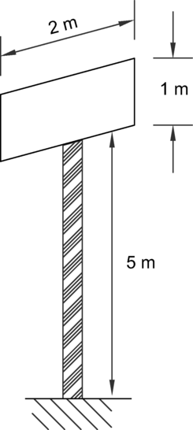
What, most nearly, is the drag coefficient on the pole?
[latex]A[/latex]
0.4
[latex]B[/latex]
1.0
[latex]C[/latex]
2.1
[latex]D[/latex]
3.0
Solution:Calculate the Reynolds number for the pole. The wind velocity is

The Reynolds number is
Use the Drag Coefficient for Spheres, Disks, and Cylinders figure given in the Fluid Mechanics section of the *NCEES Handbook* to find the drag coefficient for a cylinder with a Reynolds number of 250,000. The corresponding factor is 1.0.

***The answer is [latex]B[/latex].***
Question:
Dry saturated steam at 10 bar with negligible velocity enters a convergent nozzle and is discharged at a pressure of 1 bar. Assuming no losses, the velocity of steam leaving the nozzle is most nearly
[latex]A[/latex]
10 m/s
[latex]B[/latex]
103 m/s
[latex]C[/latex]
143 m/s
[latex]D[/latex]
453 m/s
Solution:In a convergent nozzle, the cross-sectional area of the nozzle decreases continuously from entrance to exit as shown.

The mass of the fluid passing through the nozzle remains constant, and the fluid’s heat energy is converted to kinetic energy with some loss. In an isentropic process, the loss is neglected. See the *NCEES Handbook*: [latex]1[/latex] Fluid Mechanics section for energy formula, [latex]2[/latex] Thermodynamics section for steam tables, and [latex]3[/latex] the Units and Conversion Factors section. In an ideal gas for an isentropic process, the energy relationship [latex]per unit mass[/latex] between the entry and exit points is
**step 1: **
It is known that the steam velocity at the entrance is negligible. Therefore,
**step 2: **
The nozzle pressure at the inlet is known.

From steam tables, the corresponding pressure, enthalpy is

At the nozzle exit, the pressure is
From steam tables, the corresponding pressure, enthalpy is
**step 3: **
Determine the enthalpy drop in Joule-units.
**step 4: **
Determine the velocity of steam leaving the nozzle.
***The answer is [latex]D[/latex].***
Question:
A centrifugal pump runs at a speed of 750 rpm. In order to double the discharge, it is proposed to install two such pumps in parallel for the pumping against a static head of 50 ft through 4000 ft of 12 in main. Both pumps have identical efficiencies. The friction loss of the pipeline for the pumps running in parallel as compared to a single pump operating is most nearly
[latex]A[/latex]
0.5
[latex]B[/latex]
1
[latex]C[/latex]
2
[latex]D[/latex]
4
Solution:For the frictional resistance or head loss for fluid flowing a segment of pipeline, use the Darcy-Weisbach equation, as given in the given in the *NCEES Handbook*, Fluid Mechanics section.

**step 1: **
Express the equation in terms of fluid discharge,
Q.

**step 2: **
Use the above velocity expression in the Darcy-Weisbach equation for a single pump operating.

**step 3: **
With two pumps in parallel, the discharge is doubled while the pipe size remains the same. The new discharge is
Q2 = 2
Q*
The head loss for two pumps is

Therefore,

***The answer is [latex]D[/latex].***
Question:
A family of pumps has a fixed impeller diameter of 6 3/4 in, an operating speed of 1750 rpm, and a discharge rate of 80 gpm. What, most nearly, is the brake power [latex]BHP[/latex] requirement?
[latex]A[/latex]
3/4 hp
[latex]B[/latex]
1 hp
[latex]C[/latex]
1 1/2 hp
[latex]D[/latex]
2 hp
Solution:
The curves for pumps with 1750 rpm are given in the *NCEES Handbook*, Fluid Mechanics section.
**step 1: **
Locate the curve [latex]C[/latex] for the 6 3/4 in diameter pumps.
**step 2: **
The x-axis shows discharge rates. Locate Q = 80 gpm and read vertically to the pump curve.
**step 3: **
The remaining parameters are read at this point. At a capacity of 80 gpm, the curve for 6 3/4 diameter curve intersects the line for 1 hp.
***The answer is [latex]B[/latex].***
Question:
A 1 hp, 6 in diameter impeller pump with an operating speed of 1500 rpm is being replaced by a pump having the same geometrical design family operating under similar dynamics. The new pump has a diameter of 8 in and an operating speed of speed of 2000 rpm. Both pumps are used for pumping water. The power requirement for new pump is most nearly
[latex]A[/latex]
2 hp
[latex]B[/latex]
4 hp
[latex]C[/latex]
8 hp
[latex]D[/latex]
10 hp
Solution:The scaling laws and performance curves for pumps are given in the *NCEES Handbook*, Fluid Mechanics section. The power requirement of the new pump can be determined using the relation
**step 1: **
Since both pumps are used to pump water, the fluid density is
**step 2: **
Apply the given pump properties to determine the power requirement.

***The answer is [latex]D[/latex].***
Question:
A dam is modeled on a scale of 16:1. The protype requires a velocity of 4 ft/sec. The velocity at which the model should be tested is
[latex]A[/latex]
0.25 ft/sec
[latex]B[/latex]
1 ft/sec
[latex]C[/latex]
2 ft/sec
[latex]D[/latex]
4 ft/sec
Solution:The basis of dimensional analysis is that all terms of any correct physical equation must be dimensionally homogeneous. This implies that the power to which fundamental dimensions are raised must be the same on both the prototype and its model. Since gravity is the dominant force in the design of dams, the Froude number is be used for similitude. The Froude number is defined as the ratio of inertial force to gravity force.
**step 1: **
Use Froude number formulas given in the *NCEES Handbook*, Fluid Mechanics section.
It is expressed as

**step 2: **
Using the above equation, determine flow velocity for model.

***The answer is [latex]B[/latex].***
Question:
A spherical vessel is 2 m in diameter and contains air at 19°C and at 750 mm mercury. The air mass in the vessel is most nearly
[latex]A[/latex]
0.15 kg
[latex]B[/latex]
0.50 kg
[latex]C[/latex]
1.1 kg
[latex]D[/latex]
5.0 kg
Solution:**step 1: **
See the *NCEES Handbook*, Thermodynamics and the Units and Conversion Factors sections. To determine the mass, *m,* use the ideal gas relation.
**step 2: **
It is given that the initial pressure is
**step 3: **
Convert the temperature to kelvins.

**step 4: **
The vessel volume is given in the Mensuration of Areas and Volumes table in the *NCEES Handbook*. For a sphere,

**step 5: **
The molecular weight of air is 28.966 g/mol, as given in the Environmental Engineering section of the *NCEES Handbook*. The universal gas constant,
R, is given by

**step 6: **
Use the parameters computed above to determine mass.

***The answer is [latex]D[/latex].***
Question:
A gas mass has a volume of 1 m3 at a pressure of 2 bar and a temperature of 100°C. It is compressed at a constant pressure to a volume of 0.8 m3. The work done in compressing the gas is most nearly
[latex]A[/latex]
1.2 kJ
[latex]B[/latex]
2.5 kJ
[latex]C[/latex]
20 kJ
[latex]D[/latex]
40 kJ
Solution:See the *NCEES Handbook*, Thermodynamics section. The problem states a special case of closed systems [latex]with no change in kinetic or potential energy[/latex]. The pressure is constant and energy is used to compress the gas. The work done is the hatched area shown.

**step 1: **
Determine pressure in Pascal units.

**step 2: **
Determine work done in kilojoules.
***The answer is [latex]D[/latex].***
Question:
1 m3 of propane gas is compressed isentropically from an initial pressure of 1 bar to 15 bar at 289K. The temperature change is most nearly
[latex]A[/latex]
16°C
[latex]B[/latex]
33°C
[latex]C[/latex]
57°C
[latex]D[/latex]
81°C
Solution:An isentropic process is a process in which the working substance neither receives heat nor gives heat to its surrounding. The process takes place without a change of entropy. It is a special case of an adiabatic process that is reversible. The work transfers of the system are frictionless, and there is no transfer of heat or matter. As such, it is an idealized process. The problem states a special case of closed systems [latex]with no change in kinetic or potential energy[/latex]. The temperature is constant, and energy is used to compress the gas. The work done is the hatched area shown. See the *NCEES Handbook*, Thermodynamics section.

**step 1: **
Determine volume in the compressed state. It is given that for the isentropic process


Use the Thermal and Physical Property Tables given in the *NCEES Handbook*. For propane, *k =
Question:
A steam turbine is used to generate power. 5 lbm/sec of steam enters the turbine with a velocity of 50 ft/sec and enthalpy of 1000 Btu/lbm. The steam is expanded to a velocity of 100 ft/sec and an enthalpy of 800 Btu/lbm as it enters the condenser. The heat loss from the turbine casing is 49 Btu/sec. Assuming no loss in potential energy, the power generated at the turbine shaft is most nearly
[latex]A[/latex]
800 Btu/sec
[latex]B[/latex]
950 Btu/sec
[latex]C[/latex]
1000 Btu/sec
[latex]D[/latex]
1050 Btu/sec
Solution:The problem states a steady flow system which does not change with time. See the *NCEES Handbook*, Thermodynamics section. The system general equation is given by
**step 1: **
In this case, the mass at the inlet equals the mass at the exit, and there is no change in its elevation. Therefore, there is no change in the potential energy. Simplify the equation to determine work done.
**step 2: **
Determine the net rate of work out of the system.
Use the conversion factor from the *NCEES Handbook* to convert ft-lbf units to Btu units. Apply the formula.

***The answer is [latex]B[/latex].***
Question:
A steam power plant is supplied with dry saturated steam at a pressure of 200 psi. It exhausts into a condenser at 2.5 psi and has a saturated liquid enthalpy level of 102 Btu/lbm. The Rankine [latex]isentropic[/latex] efficiency of the turbine is most nearly
[latex]A[/latex]
26%
[latex]B[/latex]
32%
[latex]C[/latex]
36%
[latex]D[/latex]
63%
Solution:The problem involves reading values off the steam tables or the Mollier diagram. See the *NCEES Handbook*, Thermodynamics section, steam tables, Mollier [latex]*h, s*[/latex] diagram for steam, and Rankine cycle diagrams. Turbines are considered adiabatic systems. There is no heat transfer in a turbine, and the entropy change is considered zero. Changes in enthalpies are considered to determine a turbine’s isentropic efficiency.

Steam tables provide the needed values to calculate *η*. However, the tables given in the *NCEES Handbook* are in SI units, and the problem is stated in Btu units. The unit conversion is time consuming. Use the Mollier diagram that is in Btu units.
**step 1: **
Using the Mollier diagram, locate the point at the intersection of the saturation line and 200 psi pressure line and determine the corresponding enthalpy.
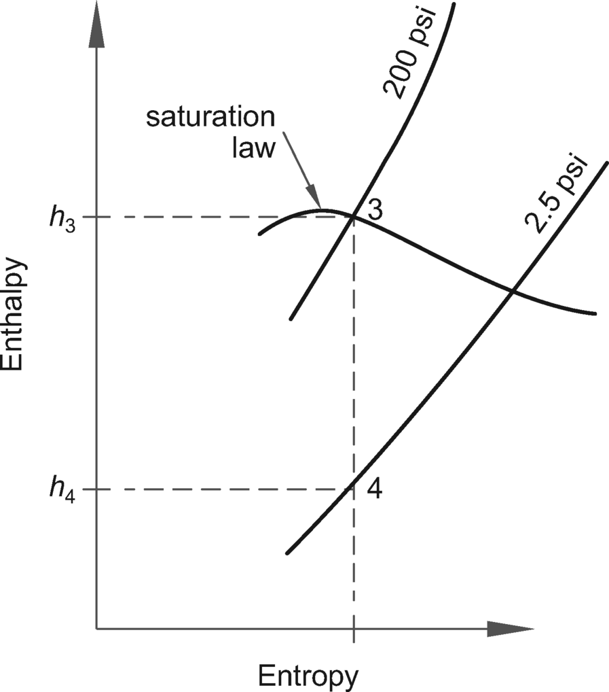
**step 2: **
Keeping the entropy constant as determined in step 1, draw a straight line down to the 2.5 psi pressure line, noted as point 4 as shown. The corresponding enthalpy is

**step 3: **
Use the exit saturated liquid enthalpy level given the problem statement,
h4
s = 102 Btu/lbm. Use the enthalpy values in Btu/lbm and determine the turbine efficiency.
***The answer is [latex]A[/latex].***
Question:
A diesel engine has a compression ratio of 10:1. Its fuel is cut off at 7% of the stroke. Using the cold air standard, its efficiency is most nearly
[latex]A[/latex]
36%
[latex]B[/latex]
51%
[latex]C[/latex]
56%
[latex]D[/latex]
61%
Solution:A diesel cycle is shown.

An ideal diesel cycle consists of two reversible adiabatic or isentropic processes, a constant-pressure process, and a constant-volume process. See the *NCEES Handbook*, Mechanical Engineering section. The engine efficiency is

**step 1: **
From Thermal and Physical Property Tables [latex]at room temperature[/latex], the ratio
k for air = 1.4.
**step 2: **
It is given that the volume ratio is

**step 3: **
Determine, the cutoff ratio,
rc. Let
V2 = 1 unit. Therefore,
V1 = 10 units. The volume at fuel cutoff is

The cutoff ratio is

The efficiency is
***The answer is [latex]C[/latex].***
Question:
HFC-134a refrigerant is used in a refrigeration cycle between 0.1 MPa and 1 MPa. Its coefficient of performance [latex]COP[/latex] is most nearly
[latex]A[/latex]
0.4
[latex]B[/latex]
1.0
[latex]C[/latex]
1.6
[latex]D[/latex]
2.5
Solution:The P-
h Diagram for Refrigerant HFC-134a is given in the *NCEES Handbook*, Thermodynamics section. Refrigeration cycles are the reverse of heat engine cycles. Heat is moved from low to high temperature, requiring work,
W. The coefficient of performance is defined as

The determination of COP requires enthalpies [latex]
h- values[/latex] at four corners of the refrigeration cycle. Use the
p-
h diagram for HFC-134a.
**step 1: **
For 0.1 MPa pressure, locate the intersection of the pressure line and the saturated vapor side of the saturation dome.

Read the enthalpy value on the
x-axis. It is
**step 2: **
For 1 MPa pressure, locate the intersection of the line and the saturated vapor side of the saturation dome. Read the enthalpy value on the
x-axis. It is

**step 3: **
For 1 MPa pressure line, locate the intersection of the line and the saturated liquid side of the saturation dome. Read the enthalpy value on the *x-*axis.

**step 4: **
By definition, enthalpies
h3 and
h4 are equal.

**step 5: **
Apply the formula to calculate COP.
***The answer is [latex]D[/latex].***
Question:
A plant produces ice at 10,000 kg daily. The average water supply is at 23.2°C, and the latent heat of ice is 335 kJ/kg. The average heat extracted is most nearly
[latex]A[/latex]
50 kW
[latex]B[/latex]
135 kW
[latex]C[/latex]
335 kW
[latex]D[/latex]
450 kW
Solution:See the *NCEES Handbook*, Thermodynamics section. It is given that the ice forms at 0°C, and

**step 1: **
Convert daily production to production per second.
**step 2: **
Two types of heat need to be extracted from the incoming water.
Apply the above values and calculate.
***The answer is [latex]A[/latex].***
Question:
Atmospheric air at 29.921 in of mercury pressure has 80°F dry-bulb temperature and 60°F wet-bulb temperature. Using the psychrometric chart such as given in the *NCEES Handbook*, the corresponding relative humidity, expressed as a percentage and rounded to the nearest integer, is * *. Enter your response in the blank.
Solution:See the *NCEES Handbook*, Thermodynamics section. Use the psychrometric chart and read off the results as shown. The chart is a plot of atmospheric air properties as a function of dry-bulb temperature [latex]
tdb[/latex].

**step 1: **
The air condition is 80°F dry-bulb temperature,
Tdb, and 60° F wet-bulb temperature,
Twb. Locate the condition on the chart at point A.
**step 2: **
Read the relative humidity along the relative humidity curve. It is 30%.
***The answer is 30%.***
Question:
4 kg of oxygen is available to burn 1 kg of carbon. The amount of carbon monoxide produced as a result of perfect combustion, in kilograms and rounded to the nearest integer, is * *. Enter your response in the blank.
Solution:
See the *NCEES Handbook*, Chemistry and Biology and Thermodynamics sections. The stoichiometric equation for combustion of carbon in air given in the Handbook is
The equation shows that it takes two volumes of oxygen to burn one volume of carbon. Carbon monoxide is produced instead of carbon dioxide if the oxygen supply is insufficient. Therefore, determine whether the 4 kg of oxygen is sufficient to complete the combustion. To calculate mass products of combustion, use the periodic table of elements given in the Chemistry section of the *NCEES Handbook*. In terms of moles, the above equation becomes
To determine the products of combustion for 1 kg carbon, divide both sides of the equation by 12.
Compare the supply of oxygen with the amount required for complete combustion. Since the oxygen supply is more than that needed for complete combustion, no carbon monoxide is produced during the combustion process.
***The answer is 0 kg.***
Question:
A 160 mm thick composite wall is composed of three different materials.
material type thickness [latex]mm[/latex] conductivity
[latex]W/m·K[/latex] 1 outside 100 0.1 2 middle 35 0.07 3 inside 25 0.05
The wall surface is 50 m2, and the temperature drop from outside to inside is 30°C. The wall’s thermal conductance is most nearly
[latex]A[/latex]
1 °C/W
[latex]B[/latex]
2 °C/W
[latex]C[/latex]
4 °C/W
[latex]D[/latex]
8 °C/W
Solution:See the *NCEES Handbook*, Heat Transfer section, for conduction heat loss equations. For a plane wall
It is measured in either K/W or °C/W, as the interval difference in degrees Celsius or kelvins in conduction is the same. A composite wall offers conduction in series as shown.

For a composite wall, thermal resistance is

For unit wall area,

***The answer is [latex]B[/latex].***
Question:
An air duct has a square section and a diagonal partition as shown.
Assuming that the enclosed surfaces are diffuse emitters and reflectors and have uniform radiosity, the shape factor F21 of the triangular part is most nearly
[latex]A[/latex]
0.31
[latex]B[/latex]
0.51
[latex]C[/latex]
0.71
[latex]D[/latex]
0.91
Solution:See the *NCEES Handbook,* Heat Transfer section, for two applicable formulas. The shape factor, view factor, or configuration factor is the fraction of the radiation leaving surface 1 that is intercepted by the other surfaces. Its value is between 0 and 1. In an enclosure, the conservation rule applies. It states that all radiation leaving surface
i must be intercepted by the enclosed surfaces. The summation rule for
n surfaces is

**step 1: **
In this case, the enclosure has three surfaces. For radiation leaving surface 1,

The shape factor
F11 represents the fraction of radiation that leaves surface 1 and then is intercepted by the same surface. Because surface 1 is flat,
By symmetry,

Therefore,

**step 2: **
To determine shape factor
F21, consider the reciprocity relationship. For two surfaces that are diffuse emitters and reflectors and have uniform radiosity, the reciprocity relationship applies and is given by

Consider a unit length of the air duct and determine the areas of surfaces 1 and 2.

Calculate shape factor
F*

***The answer is [latex]C[/latex].***
Question:
* 0.2
If the space between the tubes is evacuated, the energy exchange by radiation per unit length from the inner pipe to the outer tube is most nearly:
[latex]A[/latex]
−6.3 W/m
[latex]B[/latex]
−4.1 W/m
[latex]C[/latex]
3.4 W/m
[latex]D[/latex]
6.3 W/m
Solution:Use the *NCEES Handbook*, Heat Transfer section. The net energy exchange by radiation between two diffuse-gray surfaces that form an enclosure is expressed as

**step 1: **
Consider the length of each tube,
L = 1 m. Use m as the length unit. All parameters can be calculated form the data provided.
**step 2: **
The shape factor
F12 is the fraction of the radiation leaving surface 1 that is intercepted by surface 2. From the conservation equation, its value is 1.
**step 3: **
Assume that the radiation energy is flowing from surface 1 to surface 2—from the outer surface of the inner tube to the inner surface of the outer tube. Determine the heat gain using the energy exchange formula.

The negative sign indicates that the radiation energy is traveling from surface 2 to surface 1 and not from surface 1 to surface 2.
***The answer is [latex]B[/latex].***
*** 91 :drill:
:PROPERTIES:
:ID: f3f2f626-cee9-42f9-b1b8-8aad65f650c6
:END:
A steel pipe carrying steam is hung from the ceiling in a ventilated room, as shown.
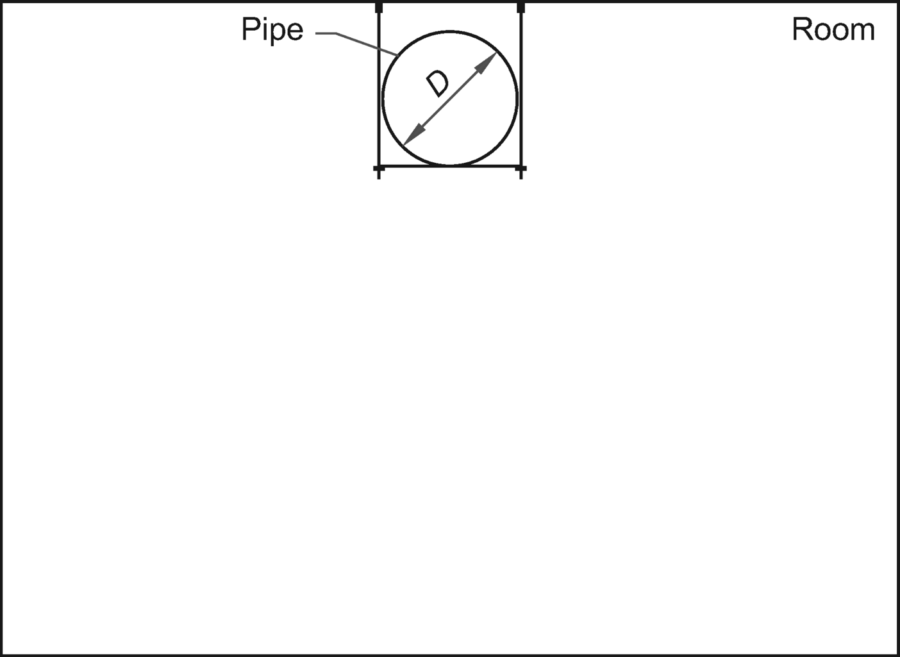
The pertinent heat transfer data is tabulated below.
steel pipe diameter 500 mm temp at outer surface of pipe 100°C room [latex]air and walls[/latex] steady state temp 27°C coefficient of heat conduction 83.5 W/m·K coefficient of convection from pipe to air 15 W/m2 emissivity for steel pipe outer surface 0.6
The convection and radiation heat loss from pipe surface per meter length is most nearly
[latex]A[/latex]
620 W/m
[latex]B[/latex]
1220 W/m
[latex]C[/latex]
1720 W/m
[latex]D[/latex]
2320 W/m
****
See the *NCEES Handbook,* Heat Transfer section, for convection and radiation heat loss equations.
The heat loss through convection and radiation are calculated using the absolute temperature scale [latex]kelvins[/latex]. For convection, the heat loss is based on the linear difference of the absolute temperatures. The temperature difference is numerically the same for both the Celsius and Kelvin scales. To avoid confusion in units, use kelvins for both convection and radiation losses.
See the *NCEES Handbook*, the Units and Conversion Factors: Fundamental Constants section, for the Stefan-Boltzmann constant.

It is given that

**step 1: **
Consider a 1 m long pipe section.
Convection coefficient,
Pipe surface temp,

Room and wall temp,
**step 2: **
All parameters are known. Determine the heat loss.

***The answer is [latex]D[/latex].***
Question:
** 5.5 min after the oil starts flowing, the Fourier number at the exterior surface of the pipe is most nearly
[latex]A[/latex]
1.5
[latex]B[/latex]
6.3
[latex]C[/latex]
9.4
[latex]D[/latex]
11
Solution:The pertinent properties of iron are given in the *NCEES Handbook*, Properties of Metals table.
Density,
Specific heat,

Heat conductivity,
**step 1: **
The Fourier number is a dimensionless number. It is defined as
It is given in the *NCEES Handbook*, Heat Transfer: Approximate Solution for Solid with Sudden Convection section as
Fourier number,
Thermal diffusivity,
**step 2: **
With all the parameters known, determine the value of Fo.
***The answer is [latex]B[/latex].***
*** 93 :drill:
:PROPERTIES:
:ID: 1ce0b8ff-e74d-441c-ab62-0d3361b78889
:END:
Hot oil enters a counterflow heat exchanger at 100°C and leaves at 54°C. Water is used to cool the oil in the exchanger. It is specified that water leaves the exchanger at 40°C. The specific heat of the oil is 2 kJ/kg·K. The oil flow rate is 1 kg/s, and the water flow rate is 2 kg/s. Assuming conservation of energy and no losses, the water temperature at the inlet is most nearly
[latex]A[/latex]
9.2°C
[latex]B[/latex]
19°C
[latex]C[/latex]
29°C
[latex]D[/latex]
89°C
****
Heat transfer is affected by the specific heat values of the fluids in the exchanger. The specific heat capacity of the oil is given in the problem statement. For the specific heat capacity of water, see the *NCEES Handbook*, Thermodynamics section.
For water,

**step 1: **
The rate of heat transfer associated with either fluid flow stream in a heat exchanger is
Based on the assumption described, the heat balance of both fluids is expressed as
The flow rates of water and oils are given. Out of the four temperatures noted in the above equation, three temperatures are given, and only
T*c,i* is unknown.
**step 2: **
Find the temperature,
T*c,i*. Since the losses are negligible, use the conservation of energy equation, and find the water temperature at the inlet. Rearrange the equation to solve for
T*c,i*.

***The answer is [latex]C[/latex].***
Question:
A thermocouple is used to measure temperature in a gas pipe. The thermocouple is spherical in shape with a diameter of 9 mm. Its thermal conductivity is 20 W/m·K. The convection heat-transfer coefficient of the gas is 400 W/m2·K. Its Biot number is * *. Enter your response in the blank.
Solution:See the *NCEES Handbook*, Heat Transfer section. The Biot number is used in transient conduction problems in which a solid body experiences a sudden change in its thermal environment. It is defined as

See the *NCEES Handbook*, Mathematics section. For a sphere,

It is given that
Therefore,

***The answer is 0.03.***
Question:A negative feedback control system model is shown.

For the reference input
R[latex]
s[/latex], the overall transfer function for the system is expressed as

The function noted above has two missing terms,
A and
B. From the following list, move the two correct terms to the equations below.
G1
G3
G1
H1
G2
G3
G2
H1
G3
H1
A =
B =
Solution:See the *NCEES Handbook*, Instrumentation, Measurement, and Control section.
**step 1: **
Select a subsystem out of the given system block diagram for which the overall response is known. Refer to the *NCEES Handbook*, Instrumentation, Measurement, and Control section. Use the formula to determine the overall function. The response for a subsystem with transfer functions
G1 and
G2 is well known and is given in the *NCEES Handbook*. Select subsystem A as shown.
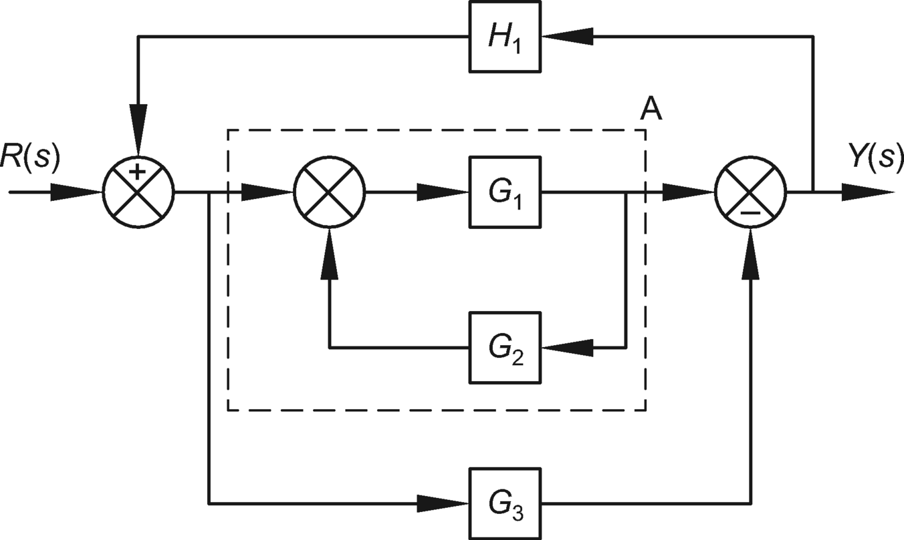
For a system that has a controller
G1 and a negative feedback
G2, the overall transfer function is given by

**step 2: **
Show the system with results from step 1 incorporated. Select next subsystem, B. It sums up two systems,
YA and
G3, that are in parallel. Their resultant is their algebraic sum.

**step 3: **
Use the formula and substitute transfer function values to determine overall function of the subsystem B block output.

**step 4: **
Now the system is reduced to the two subsystems:
YB and the feedback
H1. The feedback is positive and, therefore, the sign in the denominator in the overall response is negative.


***The answer is***
A =
G1
H1
B =
G3
H1
Question:A negative feedback control system model is shown.

The steady-state gain for the system is most nearly
[latex]A[/latex]
0.9
[latex]B[/latex]
3
[latex]C[/latex]
10
[latex]D[/latex]
19
Solution:See the *NCEES Handbook*, Instrumentation, Measurement, and Control section. For a system that has a controller *G1[latex]s[/latex]* and a negative feedback *H[latex]s[/latex]*, the overall transfer function is given by
**step 1: **
Use the formula to determine overall function. Since *H[latex]s[/latex]* is not specified, it is assumed as 1.
To simply the equation, multiply both the numerator and denominator by
s \+ 2.

**step 2: **
For steady state,
s = 0.
***The answer is [latex]A[/latex].***
Question:
A 22.5 kg ± 0.1 kg sphere is moving with a velocity of 5.19 m/s ± 0.05 m/s. The sphere’s kinetic energy, including its measurement uncertainty, in joules and rounded to the nearest integer, is * *. Enter your response in the blank.
Solution:See the *NCEES Handbook*, Instrumentation, Measurement, and Control section. Measurement accuracy is defined as closeness of agreement between a measured quantity value and a true quantity value of a measurement. When reporting measurement results, it is necessary to provide an associated uncertainty so that those who use it may assess its reliability. One method to assess the uncertainty is to use the Kline-McClintock general equation.

In this case, uncertainties in mass and velocity measurements are known. The uncertainty in measurement of kinetic energy [latex]KE[/latex] needs to be computed.
**step 1: **
Determine the average KE of the object.

**step 2: **
See the *NCEES Handbook*, Mathematics section, for derivatives and partially differentiate the KE equation with respect to the mass and velocity.
**step 3: **
Apply the Kline-McClintock equation to determine the measurement uncertainty in KE.
**step 4: **
The measured KE is 303 J ± 6 J.
***The answer is 303 ± 6 J.***
Question:
A 350 Ω strain gauge is used to measure axial elongation in a 10 in long metallic bar. The change in resistance is noted as 0.28 Ω. If the gauge factor is 2.0, the elongation in the bar is most nearly
[latex]A[/latex]
0.40 *μ*in
[latex]B[/latex]
400 *μ*in
[latex]C[/latex]
4000 *μ*in
[latex]D[/latex]
40,000 *μ*in
Solution:See the *NCEES Handbook*, Instrumentation, Measurement, and Control section. The gauge factor [latex]GF[/latex] is defined as the ratio of fractional change in electrical resistance to the fractional change in length [latex]strain[/latex].
**step 1: **
It is given that
All other parameters, except the bar elongation, are known.
**step 2: **
Using the data, determine the elongation.

***The answer is [latex]C[/latex].***
Question:
A typical thermistor is used to check a fluid temperature, and a resistance reading of 9.8 kΩ is noted. The fluid temperature, in degrees Celsius and rounded to the nearest integer, is * *. Enter your response in the blank.
Solution:See the *NCEES Handbook*, Instrumentation, Measurement, and Control section. The Steinhart-Hart equation is the best mathematical expression for resistance temperature relationship of negative temperature coefficient [latex]NTC[/latex] thermistors and NTC probe assemblies.
For a typical thermistor, the three constants,
A,
B, and
C, in the equation are given in the *NCEES Handbook* as
**step 1: **
For resistance
R = 9.8 kΩ, determine
T.

**step 2: **
The temperature is in kelvins. Convert kelvins to degrees Celsius.

***The answer is 0°C. ***
Question:A 1 in diameter steel shift linkage is subjected to a tensile force of 100 lbf as shown.

The maximum von Mises stress in plane X-X is most nearly
[latex]A[/latex]
1.2 ksi
[latex]B[/latex]
2.2 ksi
[latex]C[/latex]
3.3 ksi
[latex]D[/latex]
4.2 ksi
Solution:**step 1: **
Draw a free-body diagram through section X-X, as shown. The section X-X is subjected to combined tension,
F, and bending moment,
M.

The von Mises stress is the maximum combined stress at the section, and is given by

The equation is given in the *NCEES Handbook*, Mechanical Engineering: Shafts and Axles section, in a general form.

In this problem, there is no torsion,
T, on the section. Therefore, the *NCEES Handbook* equation can be simplified to
**step 2: **
All parameters are known. Therefore, the von Mises stress is
***The answer is [latex]D[/latex].***
Question:
A metallic crankshaft is subjected to an alternating stress of 60 MPa with a mean stress of 60 MPa. Its properties are as follows.
Yield strength = 600 MPa
Ultimate strength = 1200 MPa
Using the Soderberg theory, the fatigue strength of the crankshaft is most nearly
[latex]A[/latex]
66 MPa
[latex]B[/latex]
96 MPa
[latex]C[/latex]
660 MPa
[latex]D[/latex]
960 MPa
Solution:The Soderberg theory states that a fatigue failure will occur if
It is given that
Yield strength,
Alternating stress,

Mean stress,
Using the data above, the failure condition requires that

Endurance limit,

Rounding the failure stress up to 67 MPa would be unsafe, therefore, it is rounded down to 66 MPa.
***The answer is [latex]A[/latex].***
Question:A 3/4 in diameter steel bolt connects the assembly in tension as shown.

The bolt is properly preloaded, and the plates are assumed rigid. Neglect the difference in bolt stiffness between its threaded and unthreaded portions. The stiffness ratio of the bronze gasket is most nearly
[latex]A[/latex]
5.0%
[latex]B[/latex]
35%
[latex]C[/latex]
65%
[latex]D[/latex]
95%
Solution:It is given that the bolt is properly preloaded and plates are stiff. Therefore, fatigue is not a serious concern in such tenson-loaded joints. The bolt material is steel, which is relatively ductile. Therefore, the stress concentration is of minor importance. The figure shows a bolted joint in tension, employing a gasket. The moduli of elasticity of steel and bronze are given in the *NCEES Handbook*, Average Mechanical Properties of Typical Engineering Materials table.
**step 1: **
Define load distribution. The assembly consists of a steel bolt and a bronze gasket. The distribution of load between the bolt and the gasket depends on their respective stiffnesses. The stiffness,
k, is defined as the load on the system [latex]or an element[/latex] that produces a unit deformation. Since the fastener assembly undergoes uniform deformation, the load on the joint assembly is distributed between the bolt and the gasket in the ratio of their stiffnesses. The part of the load carried by the gasket is

The axial stiffness of an element is defined is given by
**step 2: **
For a steel bolt,
Area,

Length,
Therefore,

**step 3: **
Determine the stiffness area of the bronze gasket. See the
NCEES Handbook, Statics section, for the ring-shaped area of friction surface.
From properties table in the *NCEES Handbook*,
Use the stiffness formula to determine the stiffness of the gasket.
Length,
Therefore,

**step 4: **
Determine the percentage of load taken by the gasket. Assume the total load to be 100 units and use the load distribution formula.

***The answer is [latex]D[/latex].***
Question:
Two springs are used to support a load, P, of 100 kg, as shown.
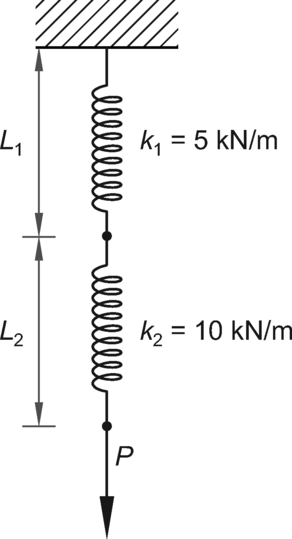
The stiffness of the system is most nearly
[latex]A[/latex]
1100 N/m
[latex]B[/latex]
3300 N/m
[latex]C[/latex]
6700 N/m
[latex]D[/latex]
7800 N/m
Solution:See the *NCEES Handbook*, Mechanical Engineering: Equivalent Spring Constant section. The springs are in series. The total elongation of the system is the sum of elongations of each spring.

The stiffness of the system,
k, is

***The answer is [latex]B[/latex].***
Question:
A screw-jack has a single thread of 8 mm pitch on a mean thread radius of 30 mm. The coefficient of friction on the screw threads is 0.12. The magnitude of the torque needed to lower a load of 500 kN, in kN·m and rounded to two decimal places, is * *. Enter your response in the blank.
Solution:Use the *NCEES Handbook,* Statics section. The torque,
M, required in lowering a load
P using a screw-jack with square thread with a radius is

**step 1: **
Simplify the above formula using the trigonometrical identity. See the *NCEES Handbook*, Mathematics section.
The friction coefficient equals

Given

**step 2: **
Determine the tangent of pitch angle α.
**step 3: **
Determine torque.

***The answer is 1.16 kN·m.***
Question:
A single disc friction clutch has the following properties.
Outside diameter = 300 mm
Inner diameter = 200 mm
Mean pressure = 0.15 N/mm2
Coefficient of friction = 0.3
Design speed = 2000 rpm
Assumptions:
1 Both sides of the clutch are equally effective. 2 Torque is uniformly distributed on the ring surface, and its resultant is located at the mean radius of the ring.
The power transmitted by the clutch is most nearly
[latex]A[/latex]
9.1 kW
[latex]B[/latex]
93 kW
[latex]C[/latex]
140 kW
[latex]D[/latex]
210 kW
Solution:The force of friction is used to transmit power from the engine to a driven shaft. The force of friction is used to start the driven shaft from the rest and to bring it to a proper speed. A single disc or plate with two friction surfaces is shown.

**step 1: **
Determine pressure area. See the
NCEES Handbook, Statics section, for the ring-shaped area of friction surface.
**step 2: **
Determine thrust. The mean pressure on the friction is
p = 0.15 N/mm2. The total force acting on the friction surface is

**step 3: **
Determine applied torque. The torque applied at a ring face is the frictional force on the ring acting tangentially at the mean radius of the ring.
The transmitted torque is limited by the friction force the disc face can develop.

**step 4: **
Determine the power transmitted by the clutch. Transmitted power depends on the shaft speed and the number of disc faces participating.
In this case two disc faces are participating. Therefore,

***The answer is [latex]B[/latex].***
Question:A single rivet double cover butt joint in plates 20 mm thick is fastened by 22 mm gross diameter rivets as shown.
The allowable stresses in the rivets are as follows.
Shear stress,

Tearing stress,

Bearing stress,

The joint is in tension, as shown. Its allowable load- carrying capacity is most nearly
[latex]A[/latex]
198 kN
[latex]B[/latex]
228 kN
[latex]C[/latex]
396 kN
[latex]D[/latex]
702 kN
Solution:A riveted joint can fail through the following modes: shear, rupture, or bearing. The allowable load is the least of the three. See the *NCEES Handbook*, Mechanical Engineering section.
**step 1: **
Failure of rivets by shear. The rivets are in double shear.

**step 2: **
By observation, the cross-sectional area of the center plate is less than the sum of the areas of the outer plates. Therefore, check the capacity of the center plate. It requires calculating net plate width.

**step 3: **
Failure by rivet crushing. By observation, check the middle plate since it is stressed twice that of the outer plates.

The allowable tensile force the joint can resist is the least of the three forces causing the above failure modes.

***The answer is [latex]B[/latex].***
Question:
A manufacturer warrants that their product performs at least 10,000 hours under standard operating conditions. A random sample of 20 units is tested under standard operating conditions until the units failed. Their mean time to failure [latex]MTTF[/latex] is tabulated.
no. of units MTTF [latex]hr[/latex] 2 13,000 4 12,000 5 11,000 4 10,000 1 9000 1 8000 1 7000 1 6000 1 5000
Consider that the units are nonrepairable once they fail. The reliability of the product, expressed as a percentage and rounded to one decimal place, is * *. Enter your response in the blank.
Solution:Reliability is defined as the probability that a product will perform successfully under specified operating conditions for a prescribed period. Reliability, like probability, varies between 0 and 1. The problem concerns 20 independent units connected in series. See the *NCEES Handbook*, Industrial and Systems Engineering: Reliability section. The reliability is defined as

**step 1: **
The data show that out of 20 units tested, 15 units performed at or above the warranty period of 10,000 hr. However, 5 units failed prematurely. A unit is considered reliable if it reaches its full warranty life. A unit is considered unreliable if fails before the warranty life is over. In the reliability analysis, the operating time up to the warranty time is considered as shown. Determine the weighted average of the MTTF.
n *θ* [latex]hr[/latex]
pi n×
p*i
Question:
In preparing mechanical engineering drawings, which is of the following drawing practices is correct?
[latex]A[/latex]
Specify sheet metal by its gage number.
[latex]B[/latex]
Specify the method of manufacturing for the component to be manufactured.
[latex]C[/latex]
Specify all angles between lines.
[latex]D[/latex]
Specify each necessary dimension of an end product. No more dimensions than those necessary for complete definition shall be given.
Solution:
See the *NCEES Handbook*, Mechanical Engineering section. The ASME Y-14.5 [latex]2009[/latex] on dimensioning and tolerancing, §1.4 applies.
§1.4[latex]h[/latex] states that “wires, cables, sheets, rods, and other materials manufactured to gage or code numbers shall be specified by linear dimensions indicating the diameter or thickness. Gage and code numbers may be shown in parenthesis.” The rationale is that the gage number is an ambiguous property of a sheet metal as may vary with the metal and the other factors. Therefore, statement A is incorrect.
§1.4[latex]e[/latex] states that the drawings should specify a part without specifying manufacturing methods. In other words, the means and methods of manufacturing should be left to the manufacturer. Therefore, statement B is incorrect.
§1.4 states that states that dimensioning and tolerancing shall clearly define engineering intent. However, §1.4[latex]i[/latex] states that a “90° angle applies where center and lines depicting features are shown in 2D orthographic drawing at right angle and no angle is specified.” §1.4[latex]j[/latex] further illustrates it. In other words, for squares and rectangular shapes, it is implied that their sides have right angles and the drawing need not state the 90° angle. Statement C is incorrect.
According to §1.4[latex]c[/latex], each necessary dimension of an end product shall be shown. No more dimensions than those necessary for complete definition shall be given. In other words, mention all necessary dimensions once. Multiple mentioning of a dimension sought should be avoided. Therefore, statement D is correct.
***The answer is [latex]D[/latex].***
Question:
A cylindrical hole has a specified diameter of 1.00 ± 0.01. The nominal dimension of the cylinder so that it fits into the hole with clearance of ± 0.01 is most nearly * *. Enter your response in the blank.
Solution:
See the *NCEES Handbook*, Mechanical Engineering section. Three definitions given in the *NCEES Handbook* are relevant: least material condition [latex]LMC[/latex], maximum material condition [latex]MMC[/latex], and virtual condition. Based on the dimensioning and tolerancing specified in the problem, the hole diameter can vary from 0.990 to 1.010.
Since the cylinder has a tolerance of ±0.010, the cylinder’s limiting dimensions are
According to ASME Y14.5 standard § 1.4 [latex]a[/latex], “each dimension shall have a tolerance except for those dimensions specifically identified as reference, maximum, minimum, or stock.” Therefore, add tolerance to the nominal dimension. The nominal size of the cylinder is 0.97 ± 0.010.
***The answer is 0.97 ± 0.010.***
# Local Variables:
# org-drill-scope: directory
# org-drill-spaced-repetition-algorithm: sm2-anki
# End: